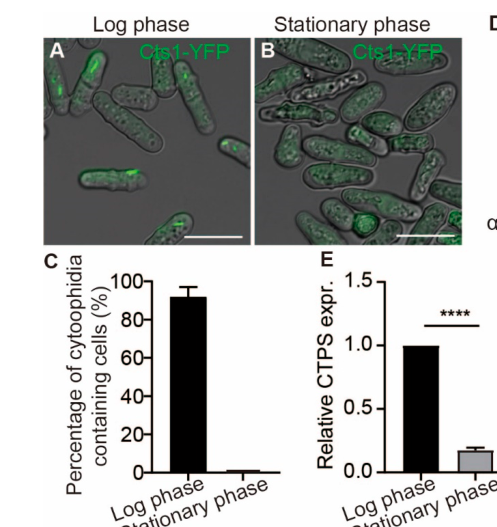

CTP synthase enzyme that catalyzes the ATP-dependent amination of UTP to CTP using glutamine as nitrogen donor (with GTP as allosteric activator and CTP as feedback inhibitor). It is the sole CTPS in fission yeast (single cts1/ura7 locus, unlike the two-paralog systems in human and budding yeast), catalyzing the rate-limiting final step of de novo CTP biosynthesis that supplies CTP for nucleic acid, phospholipid, and protein-glycosylation metabolism. Forms characteristic cytoplasmic cytoophidium filaments present in >90% of log-phase cells that disassemble in stationary phase; filaments are temperature-sensitive, stabilize the CTPS protein, and their integrity is functionally coupled to G2-phase progression and cell size.
| GO Term | Evidence | Action | Reason |
|---|---|---|---|
|
GO:0005737
cytoplasm
|
IBA
GO_REF:0000033 |
ACCEPT |
Summary: Cytoplasm localization well-supported by phylogenetic analysis (IBA). The deep research confirms Cts1 is predominantly cytosolic, existing as both diffuse pool and organized filaments. This represents accurate core localization.
Reason: IBA evidence correctly identifies cytoplasmic localization. Deep research corroborates that Cts1 functions as a cytosolic enzyme for CTP synthesis. This is a core cellular component annotation.
Supporting Evidence:
file:SCHPO/ura7/ura7-deep-research.md
Cts1 is predominantly a cytosolic enzyme, consistent with its role in nucleotide biosynthesis in the cytoplasm
|
|
GO:0042802
identical protein binding
|
IBA
GO_REF:0000033 |
ACCEPT |
Summary: CTP synthase forms homotetramers as the active enzyme form, which can further polymerize into filaments. This protein-protein interaction is essential for enzymatic function and represents a core molecular property.
Reason: The homotetramer formation is well-established for CTP synthase enzymes across species. This self-association is required for catalytic activity and is a fundamental aspect of enzyme function.
Supporting Evidence:
file:SCHPO/ura7/ura7-deep-research.md
Functionally, Cts1 operates as a homotetramer. Four identical Cts1 subunits assemble into a ring-shaped tetramer, which is the active form needed for catalysis
|
|
GO:0003883
CTP synthase activity
|
IBA
GO_REF:0000033 |
ACCEPT |
Summary: CTP synthase activity is the defining molecular function of this enzyme. IBA correctly identifies this core function based on phylogenetic conservation. Enzyme catalyzes ATP + UTP + glutamine → CTP + ADP + phosphate + glutamate.
Reason: This is the primary and essential molecular function of ura7/cts1. The enzyme is well-characterized biochemically across species. This annotation accurately captures the core catalytic activity.
Supporting Evidence:
file:SCHPO/ura7/ura7-deep-research.md
CTP synthase catalyzes the ATP-dependent amination of UTP to form CTP, using L-glutamine as the nitrogen donor... This reaction represents the final and rate-limiting step in de novo CTP biosynthesis
file:SCHPO/ura7/ura7-deep-research-falcon.md
CTPS catalyzes the **ATP-dependent amination of UTP to CTP**, using glutamine-derived ammonia delivered through an intramolecular tunnel
file:SCHPO/ura7/ura7-deep-research-falcon.md
is the sole essential CTPS enzyme catalyzing ATP-dependent UTP→CTP conversion, using glutamine-derived ammonia and regulated by GTP activation and CTP feedback inhibition
|
|
GO:0006241
CTP biosynthetic process
|
IBA
GO_REF:0000033 |
ACCEPT |
Summary: CTP biosynthetic process is the primary biological function of CTP synthase. The enzyme catalyzes the final step of de novo CTP synthesis, converting UTP to CTP. Essential for cell viability as deletion is lethal.
Reason: This accurately describes the core biological process mediated by ura7/cts1. The enzyme is essential for CTP production required for nucleic acid synthesis and cell proliferation. Well-supported by phylogenetic and functional evidence.
Supporting Evidence:
file:SCHPO/ura7/ura7-deep-research.md
As the sole CTP synthase in fission yeast, Cts1 is essential for pyrimidine nucleotide biosynthesis. It enables the de novo CTP biosynthetic process (GO:0006241) by producing CTP from UTP
file:SCHPO/ura7/ura7-deep-research-falcon.md
fission yeast as a model with **a single CTPS gene**, encoded at the **cts1** locus
PMID:38203781
S. pombe only harbors one CTPS isoform encoded by a single locus cts1 on chromosome I
|
|
GO:0097268
cytoophidium
|
IBA
GO_REF:0000033 |
ACCEPT |
Summary: Cytoophidium formation is well-established for CTP synthase. IBA correctly predicts this based on conservation across species. Direct experimental evidence also exists showing temperature-sensitive cytoophidium assembly in S. pombe.
Reason: Cytoophidium formation is a conserved feature of CTP synthase enzymes. Both phylogenetic inference and direct experimental evidence (PMID:31611173) confirm Cts1 forms these filamentous structures in S. pombe.
Supporting Evidence:
file:SCHPO/ura7/ura7-deep-research.md
Cts1 exhibits a remarkable ability to assemble into filamentous subcellular structures called cytoophidia... Each fission yeast cell generally contains two Cts1 filaments: a long, thick cytoophidium in the cytoplasm and a shorter, thinner filament associated with the nucleus
file:SCHPO/ura7/ura7-deep-research-falcon.md
cytoophidia that are **highly abundant during logarithmic growth** (reported **>90%** of cells) and largely **disappear in stationary phase**
PMID:38203781
cytoophidia were present in over 90% of fission yeast cells (Figure 1A,C) and subsequently disappeared during the stationary phase
|
|
GO:0019856
pyrimidine nucleobase biosynthetic process
|
IBA
GO_REF:0000033 |
MODIFY |
Summary: This term is broader than CTP biosynthesis, encompassing pyrimidine nucleobase production. While CTP synthase contributes to pyrimidine metabolism, this annotation is somewhat imprecise as the enzyme works with nucleotides, not nucleobases directly.
Reason: CTP synthase converts UTP to CTP (nucleotide to nucleotide conversion), not directly involved in nucleobase synthesis. The more accurate term would be GO:0006221 (pyrimidine nucleotide biosynthetic process) which correctly describes nucleotide-level metabolism.
Proposed replacements:
pyrimidine nucleotide biosynthetic process
Supporting Evidence:
file:SCHPO/ura7/ura7-deep-research.md
As the enzyme governing CTP levels, Cts1 plays a role in the broader metabolism of pyrimidine nucleotides within the cell
|
|
GO:0003883
CTP synthase activity
|
IEA
GO_REF:0000120 |
ACCEPT |
Summary: Duplicate annotation of CTP synthase activity with IEA evidence. The IBA annotation above already correctly captures this core function with stronger evidence. IEA provides supporting computational evidence.
Reason: While duplicative with the IBA annotation, this IEA annotation correctly identifies the core molecular function through automated methods. Both annotations are accurate and reinforce the primary enzyme activity.
Supporting Evidence:
file:SCHPO/ura7/ura7-deep-research.md
CTP synthase activity (GO:0003883) – Cts1 catalyzes the reaction ATP + UTP + glutamine + H₂O → CTP + ADP + phosphate + glutamate
|
|
GO:0006221
pyrimidine nucleotide biosynthetic process
|
IEA
GO_REF:0000120 |
ACCEPT |
Summary: Accurate broad biological process annotation. CTP synthase contributes to pyrimidine nucleotide biosynthesis by producing CTP. This correctly captures the metabolic context of the enzyme function.
Reason: This annotation correctly places CTP synthase in the broader context of pyrimidine nucleotide metabolism. The enzyme produces CTP, a key pyrimidine nucleotide required for RNA and DNA synthesis.
Supporting Evidence:
file:SCHPO/ura7/ura7-deep-research.md
Pyrimidine nucleotide metabolic process (GO:0006221) – As the enzyme governing CTP levels, Cts1 plays a role in the broader metabolism of pyrimidine nucleotides within the cell
|
|
GO:0006241
CTP biosynthetic process
|
IEA
GO_REF:0000002 |
ACCEPT |
Summary: Duplicate annotation of CTP biosynthetic process with IEA evidence from InterPro. Correctly identifies the core biological process. Complements the IBA annotation with computational support.
Reason: IEA annotation based on InterPro domain analysis correctly identifies the CTP biosynthetic function. This is accurate and represents the primary biological role of the enzyme.
Supporting Evidence:
file:SCHPO/ura7/ura7-deep-research.md
CTP biosynthetic process (de novo CTP biosynthesis) (GO:0006241) – cts1 is involved in the pathway producing CTP from simpler precursors, constituting the last step of de novo pyrimidine ribonucleotide synthesis
|
|
GO:0000166
nucleotide binding
|
IEA
GO_REF:0000043 |
MARK AS OVER ANNOTATED |
Summary: Generic nucleotide binding annotation based on keyword mapping. While technically correct (enzyme binds ATP, UTP, GTP), this is too broad and uninformative compared to specific substrate/cofactor binding annotations.
Reason: While CTP synthase does bind nucleotides (ATP, UTP as substrates; GTP as allosteric regulator), this generic term provides little functional information. More specific terms like ATP binding (GO:0005524) or UTP binding would be more informative.
Supporting Evidence:
file:SCHPO/ura7/ura7-deep-research.md
The C-terminal domain... binds the substrate UTP and co-substrate ATP... GTP acts as an allosteric activator of CTP synthase, binding to the GAT domain
file:SCHPO/ura7/ura7-deep-research-falcon.md
GTP** as an allosteric effector required for efficient glutamine hydrolysis
file:SCHPO/ura7/ura7-deep-research-falcon.md
Product **CTP** acts as a **feedback inhibitor**, competitively binding at the UTP site
|
|
GO:0005524
ATP binding
|
IEA
GO_REF:0000043 |
ACCEPT |
Summary: ATP binding is correct as ATP is a co-substrate in the CTP synthase reaction. However, this annotation alone provides limited functional insight compared to the full enzymatic activity annotation.
Reason: ATP binding is accurate - ATP is required as co-substrate for the amination reaction. While somewhat generic, it correctly identifies a specific nucleotide binding function of the enzyme.
Supporting Evidence:
file:SCHPO/ura7/ura7-deep-research.md
CTP synthase catalyzes the ATP-dependent amination of UTP to form CTP... The C-terminal domain constitutes the synthetase domain, which binds the substrate UTP and co-substrate ATP
file:SCHPO/ura7/ura7-deep-research-falcon.md
an N-terminal **synthase (ammonia ligase) domain** that binds ATP/UTP and performs the phosphorylation/amination chemistry, and
|
|
GO:0016874
ligase activity
|
IEA
GO_REF:0000043 |
MARK AS OVER ANNOTATED |
Summary: Generic ligase activity annotation. While CTP synthase is classified as a ligase (EC 6.3.4.2), this broad term is uninformative compared to the specific CTP synthase activity annotation.
Reason: This overly broad annotation provides minimal functional information. The specific CTP synthase activity (GO:0003883) annotation already captures the enzyme function precisely. Generic ligase activity adds no value.
Supporting Evidence:
file:SCHPO/ura7/ura7-deep-research.md
RecName: Full=CTP synthase; EC=6.3.4.2... AltName: Full=UTP--ammonia ligase
|
|
GO:0097268
cytoophidium
|
IEA
GO_REF:0000117 |
ACCEPT |
Summary: Duplicate cytoophidium annotation with IEA evidence from ARBA machine learning. Correctly identifies this cellular component. Complements the IBA and IDA evidence for this localization.
Reason: Machine learning models correctly predict cytoophidium formation, which is well-established for CTP synthase. This annotation is accurate and supported by experimental evidence from other sources.
Supporting Evidence:
PMID:31611173
Temperature-sensitive cytoophidium assembly in Schizosaccharomyces pombe... CTPS forms filamentous structures termed cytoophidia
|
|
GO:0044210
'de novo' CTP biosynthetic process
|
IEA
GO_REF:0000041 |
ACCEPT |
Summary: Specific and accurate annotation for de novo CTP biosynthesis based on UniPathway mapping. This correctly identifies the enzyme role in synthesizing CTP from precursors rather than salvage pathways.
Reason: This annotation accurately captures the specific metabolic pathway - de novo CTP synthesis. CTP synthase catalyzes the final step in de novo CTP production, distinguishing it from salvage pathway enzymes.
Supporting Evidence:
file:SCHPO/ura7/ura7-deep-research.md
This reaction represents the final and rate-limiting step in de novo CTP biosynthesis... It enables the de novo CTP biosynthetic process (GO:0006241) by producing CTP from UTP
|
|
GO:0097268
cytoophidium
|
IDA
PMID:31611173 Temperature-sensitive cytoophidium assembly in Schizosacchar... |
ACCEPT |
Summary: Direct experimental evidence for cytoophidium formation in S. pombe. Study demonstrates temperature-sensitive assembly of CTPS filaments, with detailed characterization of their dynamics and regulation.
Reason: Strong experimental evidence directly showing Cts1 forms cytoophidia in S. pombe. Study used CTPS-YFP to visualize filaments and demonstrated their temperature sensitivity, making this a high-quality direct observation.
Supporting Evidence:
PMID:31611173
During the early-to-middle exponential phase (OD600 = 0.1–1.0), cytoophidia were highly abundant, being present in more than 90% of cells... We have previously identified that CTPS forms cytoophidia in S. pombe
PMID:38203781
The CTPS H359A mutant fission yeast was viable but did not form cytoophidia
file:SCHPO/ura7/ura7-deep-research-falcon.md
Mutation of a conserved histidine (**His359→Ala**, H359A) abolishes cytoophidium formation without lethality
|
|
GO:0005737
cytoplasm
|
HDA
PMID:16823372 ORFeome cloning and global analysis of protein localization ... |
ACCEPT |
Summary: High-throughput direct assay showing cytoplasmic localization. Part of large-scale ORFeome study that determined localization of ~90% of S. pombe proteome using YFP tagging.
Reason: Direct experimental evidence from systematic protein localization study. HDA provides strong support for cytoplasmic localization, consistent with the enzyme metabolic function.
Supporting Evidence:
PMID:16823372
We determined the localization of 4,431 proteins, corresponding to approximately 90% of the fission yeast proteome, by tagging each ORF with the yellow fluorescent protein
|
|
GO:0005829
cytosol
|
ISO
GO_REF:0000024 |
ACCEPT |
Summary: Cytosol annotation based on manual transfer from orthologs. More specific than cytoplasm, correctly identifying the soluble cytoplasmic fraction where CTP synthesis occurs.
Reason: ISO evidence correctly identifies cytosolic localization based on ortholog data. This is more specific than general cytoplasm and accurately describes where the enzyme functions in nucleotide metabolism.
Supporting Evidence:
file:SCHPO/ura7/ura7-deep-research.md
Cts1 is predominantly localized in the cytosol where it carries out CTP synthesis. The majority of Cts1 enzyme resides in the cytoplasmic compartment, often visible as diffuse cytosolic signal or organized into filaments
|
|
GO:0006207
'de novo' pyrimidine nucleobase biosynthetic process
|
ISO
GO_REF:0000024 |
MODIFY |
Summary: This annotation refers to nucleobase biosynthesis, but CTP synthase works at the nucleotide level (UTP to CTP), not nucleobase level. The term is imprecise for this enzyme function.
Reason: CTP synthase converts nucleotides (UTP→CTP), not nucleobases. The more accurate term would be de novo pyrimidine nucleotide biosynthetic process or specifically de novo CTP biosynthetic process (GO:0044210).
Proposed replacements:
'de novo' CTP biosynthetic process
Supporting Evidence:
file:SCHPO/ura7/ura7-deep-research.md
This reaction represents the final and rate-limiting step in de novo CTP biosynthesis, producing cytidine 5′-triphosphate (CTP)
|
Q: How does ura7 contribute to pyrimidine biosynthesis and what determines its enzymatic specificity?
Q: What are the regulatory mechanisms that control ura7 expression in response to pyrimidine availability?
Q: How does ura7 function in the broader context of nucleotide metabolism and cellular growth?
Q: What role does ura7 play in cellular responses to nucleotide stress and starvation?
Experiment: Enzyme kinetics analysis to characterize ura7 catalytic properties and substrate specificity
Experiment: Metabolomics analysis of ura7 mutant strains to study pyrimidine metabolism alterations
Experiment: RNA-seq analysis under different nucleotide conditions to study ura7 regulation
Experiment: Growth analysis of ura7 mutants in different media to assess metabolic requirements
Exported on March 22, 2026 at 12:51 AM
Organism: Schizosaccharomyces pombe
Sequence:
MKYVLVSGGVISGIGKGVIASSTGLLLKTLGLKVTSIKIDPYMNIDAGTMSPLEHGEVFVLNDGGEVDLDLGNYERYLNVTLTHDNNITTGKVYSNVIQKERRGDYLGKTVQIVPHVTNEIQDWVERVARIPVDQSGEEPDVCIVELGGTVGDIESAAFVEAMRQFQFRVGHENFVSIHVSLVPVINGEQKTKPTQQAIRDLRSLGITPDLIACRCKQPLEKSVIDKISLFCHVGPEQVLAVHDVSSTYHVPQLLEDKLLEYLKIRFALDKISVSRELALAGENMWSSWKHLTQGYDHLFKKVTIVLVGKYTHLQDSYISVIKALEHSAMRCGRKLDLQWVEASHLEASTNTSDPLSYHKAWHLVCSANGILVPGGFGSRGVEGMIAAAKWARENNTPYLGICLGMQVAVIEFARSVCGIEGAFSEEFDKECENNVVVYMPEIDKDKLGGTMRLGLRPTFFQPNSEWSKLRKLHKMVDEVLERHRHRYEINPAFVSRLEQGGISFIGKDERGERMEIIEKRDHPYFVGVQYHPEYLSKPLKPSPPIFGLVAASAGLLDEFIQSGEEVEWSNFSHFNAESALADMNDSVEVTEEATVVTIS
I begin with the InterPro architecture. The sequence is covered end-to-end by IPR004468 (CTP synthase family, residues 1–562), establishing the enzyme class and overall fold. The N-terminus is defined by IPR027417 (P-loop containing nucleoside triphosphate hydrolase homologous superfamily, residues 1–295) and IPR017456 (CTP synthase, N-terminal domain, residues 2–263). This N-terminal module forms the ATP-dependent “synthetase” core that activates UTP via a phosphoryl transfer cycle and binds ATP and other nucleotides. The C-terminal half is specified by IPR029062 (Class I glutamine amidotransferase-like homologous superfamily, residues 299–567), IPR033828 (CTP synthase GATase domain, residues 303–550), and IPR017926 (Glutamine amidotransferase domain, residues 314–544). This composite amidotransferase module generates ammonia from glutamine and delivers it intramolecularly to the activated UTP intermediate. The ordered layout—N-terminal ATP-utilizing synthetase followed by a C-terminal class I glutamine amidotransferase—creates a bifunctional enzyme that couples ATP hydrolysis to nitrogen transfer, a hallmark of CTP synthases.
This domain architecture dictates molecular function. The N-terminal P-loop/synthetase region binds and hydrolyzes ATP to form a UTP-adenylate intermediate, while the C-terminal glutamine amidotransferase domain supplies ammonia from glutamine; together they cause the amination and isomerization chemistry that defines CTP synthase activity. Thus, the enzyme’s molecular function aligns with GO:0003889 CTP synthase activity.
From this chemistry, the biological process follows directly. By converting UTP to CTP using glutamine-derived nitrogen and ATP energy, the enzyme sets the cellular CTP pool that feeds RNA synthesis and the CDP-/CTP-dependent steps of phospholipid biosynthesis. Therefore, the activity drives pyrimidine nucleotide biosynthesis and balances the nucleotide economy, supporting GO:0006220 pyrimidine nucleotide biosynthetic process.
Cellular location is inferred from solubility and assembly behavior typical of this architecture. The absence of transmembrane segments and the soluble, oligomerization-prone N- and C-terminal domains indicate a cytosolic enzyme that assembles higher-order complexes in the soluble compartment. This supports a cytoplasmic localization consistent with GO:0005737 cytoplasm.
Mechanistically, the N-terminal synthetase binds ATP and UTP, forming a transient phosphoenzyme intermediate that primes UTP. The C-terminal glutamine amidotransferase hydrolyzes glutamine to ammonia and glutamate; intramolecular tunneling then channels ammonia to the activated intermediate, completing CTP formation. Allosteric regulation is expected: cytosolic nucleotide and amino acid levels modulate activity, and filamentation/oligomerization likely tunes flux. Given its role and location, plausible interaction partners include cytosolic nucleotide-metabolic enzymes and pathway neighbors such as UTP-producing enzymes and downstream CTP-utilizing assemblies, as well as self-association into higher-order cytoplasmic complexes that coordinate pyrimidine biosynthesis with cellular demand.
A cytoplasmic enzyme that converts UTP to CTP using ATP energy and glutamine-derived nitrogen. Its N-terminal synthetase core activates UTP and uses ATP, while a C-terminal glutamine amidotransferase module generates and channels ammonia to complete CTP formation. By sustaining the cellular CTP pool, it supports RNA and membrane lipid precursor pathways and adjusts metabolic flux through soluble, oligomerization-prone assemblies in the cytoplasm.
Catalyzes the ATP-dependent amination of UTP to CTP with glutamine as an nitrogen source.
IPR004468, family) — residues 1-562IPR027417, homologous_superfamily) — residues 1-295IPR017456, domain) — residues 2-263IPR029062, homologous_superfamily) — residues 299-567IPR033828, domain) — residues 303-550IPR017926, domain) — residues 314-544Molecular Function: molecular_function (GO:0003674), catalytic activity (GO:0003824), ligase activity (GO:0016874), ligase activity, forming carbon-nitrogen bonds (GO:0016879)
Biological Process: biological_process (GO:0008150), metabolic process (GO:0008152), cellular process (GO:0009987), biosynthetic process (GO:0009058), cellular metabolic process (GO:0044237), small molecule metabolic process (GO:0044281), nitrogen compound metabolic process (GO:0006807), organic substance metabolic process (GO:0071704), primary metabolic process (GO:0044238), organic cyclic compound metabolic process (GO:1901360), organonitrogen compound metabolic process (GO:1901564), organic substance biosynthetic process (GO:1901576), nucleobase-containing compound metabolic process (GO:0006139), heterocycle metabolic process (GO:0046483), nucleobase-containing small molecule metabolic process (GO:0055086), organophosphate metabolic process (GO:0019637), cellular biosynthetic process (GO:0044249), cellular nitrogen compound metabolic process (GO:0034641), cellular aromatic compound metabolic process (GO:0006725), carbohydrate derivative metabolic process (GO:1901135), phosphorus metabolic process (GO:0006793), organonitrogen compound biosynthetic process (GO:1901566), organic cyclic compound biosynthetic process (GO:1901362), nucleoside phosphate metabolic process (GO:0006753), ribose phosphate metabolic process (GO:0019693), heterocycle biosynthetic process (GO:0018130), aromatic compound biosynthetic process (GO:0019438), organophosphate biosynthetic process (GO:0090407), cellular nitrogen compound biosynthetic process (GO:0044271), phosphate-containing compound metabolic process (GO:0006796), carbohydrate derivative biosynthetic process (GO:1901137), pyrimidine-containing compound metabolic process (GO:0072527), nucleobase-containing compound biosynthetic process (GO:0034654), ribonucleotide metabolic process (GO:0009259), nucleoside triphosphate metabolic process (GO:0009141), pyrimidine-containing compound biosynthetic process (GO:0072528), pyrimidine nucleotide biosynthetic process (GO:0006220), nucleotide metabolic process (GO:0009117), ribose phosphate biosynthetic process (GO:0046390), nucleoside phosphate biosynthetic process (GO:1901293), nucleoside triphosphate biosynthetic process (GO:0009142), nucleotide biosynthetic process (GO:0009165), ribonucleotide biosynthetic process (GO:0009260), pyrimidine nucleotide biosynthetic process (GO:0006221), ribonucleoside triphosphate metabolic process (GO:0009199), pyrimidine nucleoside triphosphate metabolic process (GO:0009147), pyrimidine ribonucleotide metabolic process (GO:0009218), ribonucleoside triphosphate biosynthetic process (GO:0009201), pyrimidine ribonucleotide biosynthetic process (GO:0009220), pyrimidine ribonucleoside triphosphate metabolic process (GO:0009208), pyrimidine nucleoside triphosphate biosynthetic process (GO:0009148)
Cellular Component: cellular_component (GO:0005575), cellular anatomical entity (GO:0110165), intracellular anatomical structure (GO:0005622), cytoplasm (GO:0005737), supramolecular complex (GO:0099080), supramolecular polymer (GO:0099081), supramolecular fiber (GO:0099512)
Generated by BioReason
Exported on March 22, 2026 at 12:51 AM
Organism: Schizosaccharomyces pombe
Sequence:
MKYVLVSGGVISGIGKGVIASSTGLLLKTLGLKVTSIKIDPYMNIDAGTMSPLEHGEVFVLNDGGEVDLDLGNYERYLNVTLTHDNNITTGKVYSNVIQKERRGDYLGKTVQIVPHVTNEIQDWVERVARIPVDQSGEEPDVCIVELGGTVGDIESAAFVEAMRQFQFRVGHENFVSIHVSLVPVINGEQKTKPTQQAIRDLRSLGITPDLIACRCKQPLEKSVIDKISLFCHVGPEQVLAVHDVSSTYHVPQLLEDKLLEYLKIRFALDKISVSRELALAGENMWSSWKHLTQGYDHLFKKVTIVLVGKYTHLQDSYISVIKALEHSAMRCGRKLDLQWVEASHLEASTNTSDPLSYHKAWHLVCSANGILVPGGFGSRGVEGMIAAAKWARENNTPYLGICLGMQVAVIEFARSVCGIEGAFSEEFDKECENNVVVYMPEIDKDKLGGTMRLGLRPTFFQPNSEWSKLRKLHKMVDEVLERHRHRYEINPAFVSRLEQGGISFIGKDERGERMEIIEKRDHPYFVGVQYHPEYLSKPLKPSPPIFGLVAASAGLLDEFIQSGEEVEWSNFSHFNAESALADMNDSVEVTEEATVVTIS
I begin with the InterPro architecture. The sequence is covered end-to-end by IPR004468 (CTP synthase family, residues 1–562), establishing the enzyme class and overall fold. The N-terminus is defined by IPR027417 (P-loop containing nucleoside triphosphate hydrolase homologous superfamily, residues 1–295) and IPR017456 (CTP synthase, N-terminal domain, residues 2–263). This N-terminal module forms the ATP-dependent “synthetase” core that activates UTP via a phosphoryl transfer cycle and binds ATP and other nucleotides. The C-terminal half is specified by IPR029062 (Class I glutamine amidotransferase-like homologous superfamily, residues 299–567), IPR033828 (CTP synthase GATase domain, residues 303–550), and IPR017926 (Glutamine amidotransferase domain, residues 314–544). This composite amidotransferase module generates ammonia from glutamine and delivers it intramolecularly to the activated UTP intermediate. The ordered layout—N-terminal ATP-utilizing synthetase followed by a C-terminal class I glutamine amidotransferase—creates a bifunctional enzyme that couples ATP hydrolysis to nitrogen transfer, a hallmark of CTP synthases.
This domain architecture dictates molecular function. The N-terminal P-loop/synthetase region binds and hydrolyzes ATP to form a UTP-adenylate intermediate, while the C-terminal glutamine amidotransferase domain supplies ammonia from glutamine; together they cause the amination and isomerization chemistry that defines CTP synthase activity. Thus, the enzyme’s molecular function aligns with GO:0003889 CTP synthase activity.
From this chemistry, the biological process follows directly. By converting UTP to CTP using glutamine-derived nitrogen and ATP energy, the enzyme sets the cellular CTP pool that feeds RNA synthesis and the CDP-/CTP-dependent steps of phospholipid biosynthesis. Therefore, the activity drives pyrimidine nucleotide biosynthesis and balances the nucleotide economy, supporting GO:0006220 pyrimidine nucleotide biosynthetic process.
Cellular location is inferred from solubility and assembly behavior typical of this architecture. The absence of transmembrane segments and the soluble, oligomerization-prone N- and C-terminal domains indicate a cytosolic enzyme that assembles higher-order complexes in the soluble compartment. This supports a cytoplasmic localization consistent with GO:0005737 cytoplasm.
Mechanistically, the N-terminal synthetase binds ATP and UTP, forming a transient phosphoenzyme intermediate that primes UTP. The C-terminal glutamine amidotransferase hydrolyzes glutamine to ammonia and glutamate; intramolecular tunneling then channels ammonia to the activated intermediate, completing CTP formation. Allosteric regulation is expected: cytosolic nucleotide and amino acid levels modulate activity, and filamentation/oligomerization likely tunes flux. Given its role and location, plausible interaction partners include cytosolic nucleotide-metabolic enzymes and pathway neighbors such as UTP-producing enzymes and downstream CTP-utilizing assemblies, as well as self-association into higher-order cytoplasmic complexes that coordinate pyrimidine biosynthesis with cellular demand.
A cytoplasmic enzyme that converts UTP to CTP using ATP energy and glutamine-derived nitrogen. Its N-terminal synthetase core activates UTP and uses ATP, while a C-terminal glutamine amidotransferase module generates and channels ammonia to complete CTP formation. By sustaining the cellular CTP pool, it supports RNA and membrane lipid precursor pathways and adjusts metabolic flux through soluble, oligomerization-prone assemblies in the cytoplasm.
Catalyzes the ATP-dependent amination of UTP to CTP with glutamine as an nitrogen source.
IPR004468, family) — residues 1-562IPR027417, homologous_superfamily) — residues 1-295IPR017456, domain) — residues 2-263IPR029062, homologous_superfamily) — residues 299-567IPR033828, domain) — residues 303-550IPR017926, domain) — residues 314-544Molecular Function: molecular_function (GO:0003674), catalytic activity (GO:0003824), ligase activity (GO:0016874), ligase activity, forming carbon-nitrogen bonds (GO:0016879)
Biological Process: biological_process (GO:0008150), metabolic process (GO:0008152), cellular process (GO:0009987), biosynthetic process (GO:0009058), cellular metabolic process (GO:0044237), small molecule metabolic process (GO:0044281), nitrogen compound metabolic process (GO:0006807), organic substance metabolic process (GO:0071704), primary metabolic process (GO:0044238), organic cyclic compound metabolic process (GO:1901360), organonitrogen compound metabolic process (GO:1901564), organic substance biosynthetic process (GO:1901576), nucleobase-containing compound metabolic process (GO:0006139), heterocycle metabolic process (GO:0046483), nucleobase-containing small molecule metabolic process (GO:0055086), organophosphate metabolic process (GO:0019637), cellular biosynthetic process (GO:0044249), cellular nitrogen compound metabolic process (GO:0034641), cellular aromatic compound metabolic process (GO:0006725), carbohydrate derivative metabolic process (GO:1901135), phosphorus metabolic process (GO:0006793), organonitrogen compound biosynthetic process (GO:1901566), organic cyclic compound biosynthetic process (GO:1901362), nucleoside phosphate metabolic process (GO:0006753), ribose phosphate metabolic process (GO:0019693), heterocycle biosynthetic process (GO:0018130), aromatic compound biosynthetic process (GO:0019438), organophosphate biosynthetic process (GO:0090407), cellular nitrogen compound biosynthetic process (GO:0044271), phosphate-containing compound metabolic process (GO:0006796), carbohydrate derivative biosynthetic process (GO:1901137), pyrimidine-containing compound metabolic process (GO:0072527), nucleobase-containing compound biosynthetic process (GO:0034654), ribonucleotide metabolic process (GO:0009259), nucleoside triphosphate metabolic process (GO:0009141), pyrimidine-containing compound biosynthetic process (GO:0072528), pyrimidine nucleotide biosynthetic process (GO:0006220), nucleotide metabolic process (GO:0009117), ribose phosphate biosynthetic process (GO:0046390), nucleoside phosphate biosynthetic process (GO:1901293), nucleoside triphosphate biosynthetic process (GO:0009142), nucleotide biosynthetic process (GO:0009165), ribonucleotide biosynthetic process (GO:0009260), pyrimidine nucleotide biosynthetic process (GO:0006221), ribonucleoside triphosphate metabolic process (GO:0009199), pyrimidine nucleoside triphosphate metabolic process (GO:0009147), pyrimidine ribonucleotide metabolic process (GO:0009218), ribonucleoside triphosphate biosynthetic process (GO:0009201), pyrimidine ribonucleotide biosynthetic process (GO:0009220), pyrimidine ribonucleoside triphosphate metabolic process (GO:0009208), pyrimidine nucleoside triphosphate biosynthetic process (GO:0009148)
Cellular Component: cellular_component (GO:0005575), cellular anatomical entity (GO:0110165), intracellular anatomical structure (GO:0005622), cytoplasm (GO:0005737), supramolecular complex (GO:0099080), supramolecular polymer (GO:0099081), supramolecular fiber (GO:0099512)
Generated by BioReason
The research report should be a detailed narrative explaining the function, biological processes, and localization of the gene product. Citations should be given for all claims.
You should prioritize authoritative reviews and primary scientific literature when conducting research. You can supplement
this with annotations you find in gene/protein databases, but these can be outdated or inaccurate.
We are specifically interested in the primary function of the gene - for enzymes, what reaction is catalyzed, and what is the substrate specificity? For transporters, what is the substrate? For structural proteins or adapters, what is the broader structural role? For signaling molecules, what is the role in the pathway.
We are interested in where in or outside the cell the gene product carries out its function.
We are also interested in the signaling or biochemical pathways in which the gene functions. We are less interested in broad pleiotropic effects, except where these elucidate the precise role.
Include evidence where possible. We are interested in both experimental evidence as well as inference from structure, evolution, or bioinformatic analysis. Precise studies should be prioritized over high-throughput, where available.
The UniProt accession O42644 corresponds to Schizosaccharomyces pombe CTP synthase, encoded in the literature as cts1 and producing filamentous structures (“cytoophidia”) in vivo (zhang2018theassemblyof pages 52-57, zhang2019temperaturesensitivecytoophidiumassembly pages 1-6). In a 2024 S. pombe study, CTP synthase cytoophidia were present in >90% of logarithmically growing cells, but largely absent in stationary phase; a single point mutation (H359A) disassembled cytoophidia and caused slower growth, prolonged G2, and increased cell size (deng2024cytoophidiainfluencecell pages 2-5, deng2024cytoophidiainfluencecell pages 1-2). Mechanistically, CTPS catalyzes the ATP-dependent amination of UTP to CTP, using glutamine-derived ammonia delivered through an intramolecular tunnel; catalysis is activated allosterically by GTP and feedback-inhibited by CTP (bearne2022gtpdependentregulationof pages 1-2, zhou2021structuralbasisfor pages 1-2). These findings support a model in which CTPS filamentation in S. pombe is a regulated, environmentally responsive state that is functionally connected to CTPS protein stability and cell-cycle progression rather than being a passive storage depot (deng2024cytoophidiainfluencecell pages 1-2, zhang2019temperaturesensitivecytoophidiumassembly pages 6-9).
Important nomenclature limitation: although the user-provided target lists the gene name as ura7, the S. pombe primary literature retrieved here refers to the gene/protein as cts1 / CTPS / Cts1 and does not explicitly use “ura7” as an alias in the cited excerpts (zhang2018theassemblyof pages 52-57, zhang2019temperaturesensitivecytoophidiumassembly pages 1-6). Therefore, this report strictly annotates the UniProt O42644 protein (CTP synthase family; CTPS/Cts1 in S. pombe) and flags potential symbol ambiguity with URA7 in budding yeast.
CTP synthase (EC 6.3.4.2) catalyzes the terminal (rate-limiting) step of de novo CTP biosynthesis, converting UTP → CTP via ATP-dependent amination (bearne2022gtpdependentregulationof pages 1-2, zhou2021structuralbasisfor pages 1-2). In S. pombe, CTPS/Cts1 is explicitly described as catalyzing the ATP-dependent conversion of UTP to CTP (deng2024cytoophidiainfluencecell pages 1-2).
Mechanistic consensus across organisms is that the reaction proceeds through:
1) ATP-dependent phosphorylation of UTP to form a 4-phospho-UTP intermediate, and
2) nucleophilic attack by NH3 (generated from glutamine) at the pyrimidine C4 position to yield CTP (bearne2022gtpdependentregulationof pages 1-2).
A recent 2024 review of human glutamine-hydrolyzing synthetases provides a compact overall stoichiometry for CTPS (in a human context) consistent with the conserved mechanism: glutamine + ATP + UMP → glutamate + CTP + ADP + Pi (zhu2024advancesinhuman pages 4-5). While the UMP term reflects how some sources write the overall reaction (via the phosphorylated intermediate), the key conserved transformation is ATP-driven amination of UTP to CTP.
CTPS is a two-domain class I glutamine amidotransferase enzyme:
- an N-terminal synthase (ammonia ligase) domain that binds ATP/UTP and performs the phosphorylation/amination chemistry, and
- a C-terminal glutamine amidotransferase (GATase) domain that hydrolyzes glutamine to release ammonia (bearne2022gtpdependentregulationof pages 1-2, zhou2021structuralbasisfor pages 1-2).
In the S. pombe CTPS/cytophidium methods overview, the fission-yeast protein is described as having two major domains: an N-terminal CTP synthase domain and a C-terminal glutamine amidotransferase (GATase) domain; the work explicitly uses UniProt O42644 as the CTPS sequence/structure reference (zhang2018theassemblyof pages 52-57, zhang2018theassemblyofa pages 52-57).
CTPS couples glutamine hydrolysis and UTP amination by transferring nascent ammonia via an intramolecular NH3 tunnel linking the GAT and synthase active sites (bearne2022gtpdependentregulationof pages 1-2, zhou2021structuralbasisfor pages 1-2). Near-atomic cryo-EM work (Drosophila CTPS; eukaryotic) further supports that UTP binding and tunnel gating are coordinated and that GTP binding helps prevent ammonia leakage and stabilize the tunnel (zhou2021structuralbasisfor pages 1-2).
“Cytoophidia” (also called CTPS filaments) are filamentous assemblies composed largely of CTPS. Cytoophidia are conserved across domains of life and represent a form of subcellular compartmentation/organization of metabolic enzymes (deng2024cytoophidiainfluencecell pages 1-2, zhang2019temperaturesensitivecytoophidiumassembly pages 1-6).
The retrieved S. pombe literature explicitly treats fission yeast as a model with a single CTPS gene, encoded at the cts1 locus, unlike organisms with two CTPS paralogs (zhang2018theassemblyof pages 52-57, zhang2019temperaturesensitivecytoophidiumassembly pages 1-6). The protein is a canonical CTPS-family two-domain enzyme consistent with UniProt’s domain description (CTP synthase family; synthase + GATase domains) (zhang2018theassemblyof pages 52-57, bearne2022gtpdependentregulationof pages 1-2).
The term URA7 is widely used for budding yeast (Saccharomyces cerevisiae) CTPS isoforms; the S. pombe literature excerpts here instead use cts1 and do not explicitly call the S. pombe gene “ura7” (zhang2018theassemblyof pages 52-57, zhang2018theassemblyofb pages 52-57). Consequently, this report annotates the protein as CTPS/Cts1 (UniProt O42644) and flags that “ura7” may be an alias carried over from other yeast systems.
S. pombe CTPS/Cts1 catalyzes the ATP-dependent conversion of UTP to CTP (deng2024cytoophidiainfluencecell pages 1-2). Across organisms, CTPS uses:
- UTP as the pyrimidine substrate,
- ATP to form the phosphorylated intermediate,
- glutamine as the physiological nitrogen donor (via glutaminase chemistry), and
- GTP as an allosteric effector required for efficient glutamine hydrolysis (bearne2022gtpdependentregulationof pages 1-2, bearne2022gtpdependentregulationof pages 2-4).
CTPS can also use exogenous ammonia (NH3) in place of glutamine in some settings, but glutamine is the primary in vivo donor (bearne2022gtpdependentregulationof pages 1-2).
A recent mechanistic review emphasizes (i) phosphorylation of UTP to 4-phospho-UTP and (ii) ammonia attack to yield CTP, with ammonia generated in the GATase domain and transferred via an NH3 tunnel (bearne2022gtpdependentregulationof pages 1-2). Cryo-EM structural work resolves nucleotide binding modes and directly visualizes an ATP-dependent phosphorylation intermediate (in a eukaryotic CTPS model), enabling residue-level discussion of catalysis and inhibition (zhou2021structuralbasisfor pages 1-2).
CTPS is unusual among class I glutamine amidotransferases in requiring GTP as an allosteric activator of the glutaminase (GAT) domain (bearne2022gtpdependentregulationof pages 1-2). Product CTP acts as a feedback inhibitor, competitively binding at the UTP site and potentially at additional sites (reported in eukaryotes) (zhou2021structuralbasisfor pages 1-2, guo2024filamentationandinhibition pages 1-2). A 2024 review provides quantitative physiological context in humans (UTP/CTP ~253 μM/91 μM) and reports an IC50 of ~40 μM for CTP inhibition of human CTPS1 at 100 μM UTP, illustrating the potency of feedback control (non-S. pombe; used here as comparative mechanistic context) (zhu2024advancesinhuman pages 4-5).
In S. pombe, CTPS assembles into cytoplasmic cytoophidia that are highly abundant during logarithmic growth (reported >90% of cells) and largely disappear in stationary phase (deng2024cytoophidiainfluencecell pages 2-5, zhang2019temperaturesensitivecytoophidiumassembly pages 1-6). This is supported by microscopy figure panels showing filaments in log phase but not in stationary phase (deng2024cytoophidiainfluencecell media 3f52ca1c).
A 2024 study also reports that CTPS protein levels decrease in stationary phase while CTPS mRNA remains largely unchanged, consistent with regulation at the protein stability/turnover level (deng2024cytoophidiainfluencecell pages 2-5).
CTPS cytoophidia in S. pombe are temperature-sensitive: cold shock and heat shock rapidly shorten/disassemble cytoophidia, and these effects are reversible when conditions return to permissive temperature (zhang2019temperaturesensitivecytoophidiumassembly pages 1-6, zhang2019temperaturesensitivecytoophidiumassembly pages 6-9). Small heat-shock proteins are genetically required for normal cytoophidium assembly (zhang2019temperaturesensitivecytoophidiumassembly pages 6-9).
The glutamine analog DON (6-diazo-5-oxo-L-norleucine) binds irreversibly to the CTPS glutaminase chemistry (general CTPS mechanism) (bearne2022gtpdependentregulationof pages 2-4) and, in S. pombe, promotes cytoophidium assembly and increases filament length without changing total CTPS protein abundance; DON-induced assemblies can be reversed by cold shock (zhang2019temperaturesensitivecytoophidiumassembly pages 6-9).
A key 2024 advance is functional linkage between cytoophidia integrity and proliferation phenotypes in S. pombe. Mutation of a conserved histidine (His359→Ala, H359A) abolishes cytoophidium formation without lethality (deng2024cytoophidiainfluencecell pages 2-5). The loss of cytoophidia (via H359A or CTPS reduction) is associated with:
- slower growth,
- prolonged G2 phase / extended cell-cycle duration, and
- increased cell size (cell length) (deng2024cytoophidiainfluencecell pages 1-2, deng2024cytoophidiainfluencecell pages 2-5).
Microscopy panels directly show diffuse CTPS localization (no filaments) in the H359A condition compared to filamentous localization in wild type during log phase (deng2024cytoophidiainfluencecell media 3f52ca1c).
The same 2024 study argues for mutual dependence: cytoophidia stabilize CTPS protein (longer half-life), and reduced CTPS levels impair filament formation (deng2024cytoophidiainfluencecell pages 1-2). Consistent with this, H359A shows reduced CTPS protein despite unchanged mRNA (deng2024cytoophidiainfluencecell pages 2-5).
Disruption of filamentation decreased expression of genes involved in G2/M transition and growth, including slm9, and slm9 overexpression partially alleviated G2 prolongation and enlarged cell size induced by a loss-filament mutant (deng2024cytoophidiainfluencecell pages 1-2). This positions cytoophidia as functionally coupled to cell-cycle regulation in S. pombe, not merely a passive biomolecular assembly.
A fission-yeast cytoophidium methods/overview source reports that CTPS/cts1 abundance is regulated across stress and cell-cycle states, including:
- decreased CTPS RNA under heat/oxidative/osmotic stresses and after cadmium sulfate or methyl methanesulfonate treatment,
- ~10% lower CTPS in S phase compared to other stages, and
- ~5-fold reduction in CTPS RNA after nitrogen-deprivation-induced G1 arrest (zhang2018theassemblyofa pages 52-57, zhang2018theassemblyof pages 52-57).
The same source also notes post-translational regulation associated with ubiquitin binding and ubiquitin-mediated degradation (zhang2018theassemblyofa pages 52-57).
Deng et al. (2024, International Journal of Molecular Sciences, published Jan 2024; https://doi.org/10.3390/ijms25010608) provides direct experimental evidence that loss of cytoophidia (H359A or CTPS depletion) prolongs G2 and increases cell size, with cytoophidia present in >90% of log-phase cells (deng2024cytoophidiainfluencecell pages 1-2, deng2024cytoophidiainfluencecell pages 2-5). This strengthens the interpretation of cytoophidia as a functional regulatory state in proliferating fission yeast.
A 2024 review on human glutamine-hydrolyzing synthetases summarizes CTPS catalytic mechanism, ammonia tunneling, GTP allostery, and feedback inhibition and provides quantitative inhibition metrics (CTP IC50 example) and physiological nucleotide concentrations (zhu2024advancesinhuman pages 4-5).
A 2024 structural/biochemical study of prokaryotic CTPS filamentation reports a ~2.9 Å cryo-EM structure with ligands (CTP, NADH, DON) and emphasizes synergistic inhibition principles and ammonia tunnel accessibility relevant to inhibitor design (guo2024filamentationandinhibition pages 1-2).
A 2024 Nature Communications paper demonstrates that genetic deletion or pharmacologic inhibition (CTPS1 inhibitor Stp-2) can rescue severe autoimmunity phenotypes in mice (Scurfy and EAE models) while also highlighting systemic toxicity risks of broad inhibition (soudais2024inactivationofcytidine pages 2-3, soudais2024inactivationofcytidine pages 1-2). The paper reports strong dependence of proliferative tissues on CTPS1 and notes ~10-fold reduced thymic cellularity in Ctps1 knockout mice (soudais2024inactivationofcytidine pages 2-3). This is a major recent real-world “implementation” of CTPS targeting as an immunosuppression strategy.
Conditional or inducible CTPS1 inactivation (genetic) and pharmacologic CTPS1 inhibition (Stp-2) reduce autoimmune pathology in mice, supporting CTPS1 as an immunosuppression target (published Mar 2024; https://doi.org/10.1038/s41467-024-45805-y) (soudais2024inactivationofcytidine pages 1-2). The same work reports that a mutation causing human CTPS1 deficiency reduces CTPS1 expression by >80% with 10–20% residual cellular CTPS activity, illustrating how partial suppression can have strong immunological effects (soudais2024inactivationofcytidine pages 1-2).
The authors further note a selective CTPS1 inhibitor is already in clinical evaluation for relapsed/refractory T and B cell lymphomas (trial identifier NCT05463263) (soudais2024inactivationofcytidine pages 1-2).
Multiple reviews frame CTP synthase as a potential anti-pathogen target, including pathogen-essentiality examples and inhibitor development directions (thangadurai2022ctpsynthasethe pages 12-13, zhang2024theimpactof pages 13-13). A 2024 cytoophidium review highlights Mycobacterium tuberculosis killing via inhibition of bacterial PyrG (CTP synthetase) and essentiality of parasite CTPS in Toxoplasma gondii as examples of therapeutic relevance (zhang2024theimpactof pages 13-13).
Although not specific to S. pombe CTPS, whole-cell biocatalysis and metabolic engineering applications often require management of nucleotide triphosphate pools (including CTP) to drive glycosylation/nucleotide-activated sugar pathways. For example, an engineered E. coli whole-cell catalyst for sialyl-oligosaccharide synthesis models and balances flux through a module using CTP as a substrate (up to 100 mM in conversions), illustrating industrial reliance on CTP supply and recycling systems (published Nov 2023; https://doi.org/10.1186/s12934-023-02249-1) (not directly about CTPS; included as contextual application of CTP metabolism) (no pqac evidence snippet available for CTPS manipulation specifically).
Bearne et al. (2022, Biomolecules; https://doi.org/10.3390/biom12050647) provides a synthesis emphasizing that CTPS allostery (GTP activation) is intimately tied to ammonia-tunnel assembly/maintenance and that CTPS regulation involves ligand-driven oligomerization and filament formation (bearne2022gtpdependentregulationof pages 1-2).
Zhou et al. (2021, PNAS; https://doi.org/10.1073/pnas.2026621118) provides high-resolution structural support for how GTP coordinates both domains, stabilizes the tunnel, and how CTP competitively inhibits at the UTP site while also potentially binding at an ATP site (zhou2021structuralbasisfor pages 1-2).
The S. pombe studies emphasize cytoophidia as dynamic and responsive to growth phase and temperature, and the 2024 functional study links cytoophidia disruption to measurable cell-cycle phenotypes (deng2024cytoophidiainfluencecell pages 1-2, zhang2019temperaturesensitivecytoophidiumassembly pages 6-9). Together, these argue that cytoophidia are regulated supramolecular assemblies with physiological consequences.
Microscopy panels from Deng et al. (2024) illustrate (i) abundant cytoophidia in log phase but not stationary phase and (ii) diffuse CTPS localization (no cytoophidia) in the H359A mutant, supporting the growth-phase dependence and the loss-filament phenotype (deng2024cytoophidiainfluencecell media 3f52ca1c).
The following table summarizes key annotation points and the supporting evidence.
| Aspect | Evidence-based details | Key citations (pqac IDs) | Primary source (with year) |
|---|---|---|---|
| Catalytic reaction | S. pombe CTPS/Cts1 catalyzes the ATP-dependent conversion of UTP to CTP; like other CTPS enzymes, it uses glutamine hydrolysis in a C-terminal glutamine amidotransferase domain to supply ammonia to the synthase domain through an intramolecular tunnel. GTP is the allosteric activator for efficient glutamine hydrolysis, and CTP provides feedback inhibition. | (deng2024cytoophidiainfluencecell pages 1-2, bearne2022gtpdependentregulationof pages 1-2, zhou2021structuralbasisfor pages 1-2) | Deng et al., 2024; Bearne et al., 2022; Zhou et al., 2021 |
| Domain architecture | The fission-yeast enzyme is a two-domain CTPS family protein: N-terminal CTP synthase/synthase domain plus C-terminal glutamine amidotransferase (GATase) domain; S. pombe carries a single essential CTPS gene at the cts1 locus, and the cited work used UniProt O42644 for sequence/structure reference. | (zhang2018theassemblyof pages 52-57, zhang2018theassemblyofa pages 52-57, zhang2018theassemblyofb pages 52-57) | Zhang, 2018 |
| Cytoophidia formation and prevalence | CTPS/Cts1 forms filamentous cytoophidia in the cytoplasm of S. pombe. During logarithmic growth, cytoophidia are highly prevalent, reported in >90% of cells. | (deng2024cytoophidiainfluencecell pages 1-2, deng2024cytoophidiainfluencecell pages 2-5, zhang2019temperaturesensitivecytoophidiumassembly pages 1-6, deng2024cytoophidiainfluencecell media 3f52ca1c) | Deng et al., 2024; Zhang & Liu, 2019 |
| Growth-phase dynamics | Cytoophidia are abundant in early-to-mid exponential/log phase but disperse or disappear in stationary phase; this is reversible when cells are returned to rich medium. CTPS protein drops in stationary phase while mRNA is comparatively unchanged, consistent with regulation at protein stability/turnover level. | (deng2024cytoophidiainfluencecell pages 2-5, zhang2019temperaturesensitivecytoophidiumassembly pages 1-6, zhang2019temperaturesensitivecytoophidiumassembly pages 6-9, deng2024cytoophidiainfluencecell media 3f52ca1c) | Deng et al., 2024; Zhang & Liu, 2019 |
| Temperature sensitivity | Unlike some reports in budding yeast, S. pombe cytoophidia are temperature-sensitive: both cold shock and heat shock rapidly shorten/disassemble cytoophidia, with reversibility after return to permissive conditions. Small heat-shock proteins are required for normal assembly. | (zhang2019temperaturesensitivecytoophidiumassembly pages 1-6, zhang2019temperaturesensitivecytoophidiumassembly pages 6-9) | Zhang & Liu, 2019 |
| DON effect | The glutamine analog DON irreversibly targets the glutamine amidotransferase chemistry of CTPS and promotes cytoophidium assembly in S. pombe, increasing filament length without changing total CTPS protein level; DON-induced filaments can also be reversed by cold treatment. | (zhang2019temperaturesensitivecytoophidiumassembly pages 6-9, bearne2022gtpdependentregulationof pages 2-4) | Zhang & Liu, 2019; Bearne et al., 2022 |
| H359A loss-filament phenotype | Mutation of conserved His359 to Ala abolishes cytoophidium formation without lethality. Loss of filamentation causes slower growth, prolonged G2/cell-cycle duration, increased cell length, and reduced CTPS protein despite unchanged mRNA, supporting a protein-stabilizing role for cytoophidia. | (deng2024cytoophidiainfluencecell pages 1-2, deng2024cytoophidiainfluencecell pages 5-8, deng2024cytoophidiainfluencecell pages 2-5, deng2024cytoophidiainfluencecell media 3f52ca1c) | Deng et al., 2024 |
| Cell-cycle/growth linkage | In the 2024 study, filament loss or CTPS reduction decreased expression of G2/M- and growth-related genes including slm9; slm9 overexpression partially rescued the extended G2 phase and enlarged-cell phenotype, linking cytoophidia to proliferation control rather than only enzyme storage. | (deng2024cytoophidiainfluencecell pages 1-2, deng2024cytoophidiainfluencecell pages 5-8) | Deng et al., 2024 |
| Stress, nitrogen deprivation, and protein turnover regulation | CTPS/cts1 levels are reported to decline under heat, oxidative, and osmotic stress and after cadmium sulfate or methyl methanesulfonate treatment. Nitrogen-deprivation-induced G1 arrest reduces CTPS RNA about 5-fold, and S phase shows ~10% lower CTPS levels than G1/G2/M. The protein is also reported to undergo ubiquitin-mediated degradation/ubiquitin-linked regulation. | (zhang2018theassemblyofa pages 52-57, zhang2018theassemblyof pages 52-57, zhang2018theassemblyofb pages 52-57) | Zhang, 2018 |
| Quantitative highlights | Notable quantitative observations include: cytoophidia in >90% of log-phase cells; nitrogen deprivation lowering CTPS RNA ~5-fold; S phase showing ~10% lower CTPS levels; heat/cold shock effects occurring within minutes; H359A and CRISPRi-based CTPS reduction both increasing cell size and slowing growth/cell-cycle progression. | (deng2024cytoophidiainfluencecell pages 1-2, deng2024cytoophidiainfluencecell pages 2-5, zhang2019temperaturesensitivecytoophidiumassembly pages 1-6, zhang2019temperaturesensitivecytoophidiumassembly pages 6-9) | Deng et al., 2024; Zhang & Liu, 2019; Zhang, 2018 |
Table: This table summarizes the main functional annotation points for Schizosaccharomyces pombe CTPS/Cts1 (UniProt O42644), including enzymatic function, domain organization, localization into cytoophidia, regulatory inputs, and mutant phenotypes. It is useful as a compact evidence map linking each annotation point to specific context IDs and primary sources.
1) Core function: S. pombe Cts1 (UniProt O42644) is the sole essential CTPS enzyme catalyzing ATP-dependent UTP→CTP conversion, using glutamine-derived ammonia and regulated by GTP activation and CTP feedback inhibition (deng2024cytoophidiainfluencecell pages 1-2, bearne2022gtpdependentregulationof pages 1-2).
2) Localization: Cts1 forms cytoophidia that are highly prevalent in log phase (>90% of cells) and disassemble in stationary phase; cytoophidia are temperature-sensitive and promoted by DON (deng2024cytoophidiainfluencecell pages 2-5, zhang2019temperaturesensitivecytoophidiumassembly pages 6-9).
3) Physiological role: Filament integrity is functionally linked to cell-cycle control (G2 length), cell size, and gene expression (slm9), indicating cytoophidia are biologically consequential in proliferating S. pombe (deng2024cytoophidiainfluencecell pages 1-2).
4) Limitations: The alias ura7 could not be confirmed as the name used for the S. pombe gene in the retrieved primary literature excerpts, although UniProt O42644 and the cts1 single-gene context are explicitly discussed (zhang2018theassemblyof pages 52-57). If downstream curation requires strict gene-name mapping, S. pombe genome database cross-references should be consulted.
References
(zhang2018theassemblyof pages 52-57): J Zhang. The assembly of ctp synthase into the cytoophidium in schizosaccharomyces pombe. Unknown journal, 2018.
(zhang2019temperaturesensitivecytoophidiumassembly pages 1-6): Jing Zhang and Ji-Long Liu. Temperature-sensitive cytoophidium assembly in schizosaccharomyces pombe. Journal of Genetics and Genomics, 46:423-432, Sep 2019. URL: https://doi.org/10.1016/j.jgg.2019.09.002, doi:10.1016/j.jgg.2019.09.002. This article has 30 citations and is from a peer-reviewed journal.
(deng2024cytoophidiainfluencecell pages 2-5): Ruolan Deng, Yi-Lan Li, and Ji-Long Liu. Cytoophidia influence cell cycle and size in schizosaccharomyces pombe. International Journal of Molecular Sciences, 25:608, Jan 2024. URL: https://doi.org/10.3390/ijms25010608, doi:10.3390/ijms25010608. This article has 5 citations.
(deng2024cytoophidiainfluencecell pages 1-2): Ruolan Deng, Yi-Lan Li, and Ji-Long Liu. Cytoophidia influence cell cycle and size in schizosaccharomyces pombe. International Journal of Molecular Sciences, 25:608, Jan 2024. URL: https://doi.org/10.3390/ijms25010608, doi:10.3390/ijms25010608. This article has 5 citations.
(bearne2022gtpdependentregulationof pages 1-2): Stephen L. Bearne, Chen-Jun Guo, and Ji-Long Liu. Gtp-dependent regulation of ctp synthase: evolving insights into allosteric activation and nh3 translocation. Biomolecules, 12:647, Apr 2022. URL: https://doi.org/10.3390/biom12050647, doi:10.3390/biom12050647. This article has 17 citations.
(zhou2021structuralbasisfor pages 1-2): Xian Zhou, Chen-Jun Guo, Chia-Chun Chang, Jiale Zhong, Huan-Huan Hu, Guang-Ming Lu, and Ji-Long Liu. Structural basis for ligand binding modes of ctp synthase. Proceedings of the National Academy of Sciences of the United States of America, Jul 2021. URL: https://doi.org/10.1073/pnas.2026621118, doi:10.1073/pnas.2026621118. This article has 56 citations and is from a highest quality peer-reviewed journal.
(zhang2019temperaturesensitivecytoophidiumassembly pages 6-9): Jing Zhang and Ji-Long Liu. Temperature-sensitive cytoophidium assembly in schizosaccharomyces pombe. Journal of Genetics and Genomics, 46:423-432, Sep 2019. URL: https://doi.org/10.1016/j.jgg.2019.09.002, doi:10.1016/j.jgg.2019.09.002. This article has 30 citations and is from a peer-reviewed journal.
(zhu2024advancesinhuman pages 4-5): Wen Zhu, Alanya. J. Nardone, and Lucciano A. Pearce. Advances in human glutamine-hydrolyzing synthetases and their therapeutic potential. Frontiers in Chemical Biology, Jun 2024. URL: https://doi.org/10.3389/fchbi.2024.1410435, doi:10.3389/fchbi.2024.1410435. This article has 2 citations.
(zhang2018theassemblyofa pages 52-57): J Zhang. The assembly of ctp synthase into the cytoophidium in schizosaccharomyces pombe. Unknown journal, 2018.
(zhang2018theassemblyofb pages 52-57): J Zhang. The assembly of ctp synthase into the cytoophidium in schizosaccharomyces pombe. Unknown journal, 2018.
(bearne2022gtpdependentregulationof pages 2-4): Stephen L. Bearne, Chen-Jun Guo, and Ji-Long Liu. Gtp-dependent regulation of ctp synthase: evolving insights into allosteric activation and nh3 translocation. Biomolecules, 12:647, Apr 2022. URL: https://doi.org/10.3390/biom12050647, doi:10.3390/biom12050647. This article has 17 citations.
(guo2024filamentationandinhibition pages 1-2): Chenghao Guo, Zixian Wang, and Ji-Long Liu. Filamentation and inhibition of prokaryotic ctp synthase with ligands. mLife, 3:240-250, May 2024. URL: https://doi.org/10.1002/mlf2.12119, doi:10.1002/mlf2.12119. This article has 9 citations.
(deng2024cytoophidiainfluencecell media 3f52ca1c): Ruolan Deng, Yi-Lan Li, and Ji-Long Liu. Cytoophidia influence cell cycle and size in schizosaccharomyces pombe. International Journal of Molecular Sciences, 25:608, Jan 2024. URL: https://doi.org/10.3390/ijms25010608, doi:10.3390/ijms25010608. This article has 5 citations.
(soudais2024inactivationofcytidine pages 2-3): Claire Soudais, Romane Schaus, Camille Bachelet, Norbert Minet, Sara Mouasni, Cécile Garcin, Caique Lopes Souza, Pierre David, Clara Cousu, Hélène Asnagli, Andrew Parker, Paul Palmquist-Gomes, Fernando E. Sepulveda, Sébastien Storck, Sigolène M. Meilhac, Alain Fischer, Emmanuel Martin, and Sylvain Latour. Inactivation of cytidine triphosphate synthase 1 prevents fatal auto-immunity in mice. Nature Communications, Mar 2024. URL: https://doi.org/10.1038/s41467-024-45805-y, doi:10.1038/s41467-024-45805-y. This article has 8 citations and is from a highest quality peer-reviewed journal.
(soudais2024inactivationofcytidine pages 1-2): Claire Soudais, Romane Schaus, Camille Bachelet, Norbert Minet, Sara Mouasni, Cécile Garcin, Caique Lopes Souza, Pierre David, Clara Cousu, Hélène Asnagli, Andrew Parker, Paul Palmquist-Gomes, Fernando E. Sepulveda, Sébastien Storck, Sigolène M. Meilhac, Alain Fischer, Emmanuel Martin, and Sylvain Latour. Inactivation of cytidine triphosphate synthase 1 prevents fatal auto-immunity in mice. Nature Communications, Mar 2024. URL: https://doi.org/10.1038/s41467-024-45805-y, doi:10.1038/s41467-024-45805-y. This article has 8 citations and is from a highest quality peer-reviewed journal.
(thangadurai2022ctpsynthasethe pages 12-13): Shallinie Thangadurai, Morteza Bajgiran, Sharvin Manickam, Nethia Mohana-Kumaran, and Ghows Azzam. Ctp synthase: the hissing of the cellular serpent. Histochemistry and Cell Biology, 158:517-534, Jul 2022. URL: https://doi.org/10.1007/s00418-022-02133-w, doi:10.1007/s00418-022-02133-w. This article has 8 citations and is from a peer-reviewed journal.
(zhang2024theimpactof pages 13-13): Yuanbing Zhang and Ji-Long Liu. The impact of developmental and metabolic cues on cytoophidium formation. International Journal of Molecular Sciences, 25:10058, Sep 2024. URL: https://doi.org/10.3390/ijms251810058, doi:10.3390/ijms251810058. This article has 6 citations.
(deng2024cytoophidiainfluencecell pages 5-8): Ruolan Deng, Yi-Lan Li, and Ji-Long Liu. Cytoophidia influence cell cycle and size in schizosaccharomyces pombe. International Journal of Molecular Sciences, 25:608, Jan 2024. URL: https://doi.org/10.3390/ijms25010608, doi:10.3390/ijms25010608. This article has 5 citations.

Generated using OpenAI Deep Research API
The cts1 gene of Schizosaccharomyces pombe encodes a CTP synthase (CTPS) enzyme (string-db.org). CTP synthase catalyzes the ATP-dependent amination of UTP to form CTP, using L-glutamine as the nitrogen donor (string-db.org) (pmc.ncbi.nlm.nih.gov). This reaction represents the final and rate-limiting step in de novo CTP biosynthesis, producing cytidine 5′-triphosphate (CTP) and L-glutamate (pmc.ncbi.nlm.nih.gov). The enzyme has a bifunctional mechanism: an N-terminal glutamine amidotransferase (GAT) domain hydrolyzes glutamine, and the resulting ammonia is channeled through an intramolecular tunnel to the C-terminal synthetase domain, where it is incorporated into UTP in an ATP-dependent condensation (pmc.ncbi.nlm.nih.gov). Notably, Cts1 can also utilize ammonia directly (in lieu of glutamine) as a substrate for UTP amination (string-db.org).
Regulation of Cts1 activity is crucial for nucleotide homeostasis. GTP acts as an allosteric activator of CTP synthase, binding to the GAT domain to stimulate efficient glutamine hydrolysis (pmc.ncbi.nlm.nih.gov). Conversely, CTP synthases are subject to feedback inhibition by their product CTP, preventing excessive accumulation of CTP. Proper control of CTP levels is vital – an inability to regulate CTP pools is associated with cellular dysfunction and malignancies (pmc.ncbi.nlm.nih.gov). Thus, Cts1 plays a key role in maintaining nucleotide balance, coupling glutamine metabolism to pyrimidine nucleotide synthesis. The enzyme is typically active as a homotetramer, and this oligomeric state is required for its catalytic function (pmc.ncbi.nlm.nih.gov). Overall, cts1’s molecular function is defined by CTP synthase activity (GO:0003883), driving de novo CTP production that fuels myriad cellular processes.
Cts1 is predominantly a cytosolic enzyme, consistent with its role in nucleotide biosynthesis in the cytoplasm. However, under certain conditions Cts1 exhibits a remarkable ability to assemble into filamentous subcellular structures called cytoophidia (“cellular snakes”). Fluorescence-tagging experiments have shown that endogenously tagged Cts1 (Ctp1–YFP) forms filamentous cytoophidia in S. pombe (pmc.ncbi.nlm.nih.gov). Each fission yeast cell generally contains two Cts1 filaments: a long, thick cytoophidium in the cytoplasm and a shorter, thinner filament associated with the nucleus (pmc.ncbi.nlm.nih.gov). The nuclear-associated filament (sometimes termed an “N-cytoophidium”) resides at the nuclear periphery or within the nucleus, while the other filament (C-cytoophidium) is in the cytosol (pmc.ncbi.nlm.nih.gov). These observations indicate that a fraction of Cts1 localizes to the nucleus or nuclear envelope region in addition to the cytosol. In microscopy images, the cytoplasmic filament often lies adjacent to the outside of the nucleus, whereas the nuclear filament is just inside the nuclear envelope (pmc.ncbi.nlm.nih.gov). This unique distribution suggests Cts1 may dynamically partition between the cytoplasm and nucleus, forming compartment-specific enzymatic filaments.
The cytoophidium structures are dynamic and cell-cycle regulated. Time-lapse imaging reveals that upon cell division, Cts1 filaments are asymmetrically inherited – typically only one of the two daughter cells inherits the cytoophidium (particularly the cytoplasmic filament), while the other daughter often does not (pmc.ncbi.nlm.nih.gov). This suggests Cts1 assemblies can disassemble and reassemble each cell cycle, or redistribute unevenly between daughters. The physiological significance of this asymmetric inheritance is still under investigation, but it offers a unique example of a metabolic enzyme showing structured segregation during division (pmc.ncbi.nlm.nih.gov) (pmc.ncbi.nlm.nih.gov). It is clear that Cts1’s location is not uniform: it can exist as a diffuse cytosolic pool or in highly organized filamentous compartments, reflecting a layer of spatial regulation on its activity. In gene ontology terms, Cts1 is localized to the cytosol (GO:0005829) and has also been observed in the nucleus (GO:0005634) in the form of nuclear filaments.
As the sole CTP synthase in fission yeast, Cts1 is essential for pyrimidine nucleotide biosynthesis. It enables the de novo CTP biosynthetic process (GO:0006241) by producing CTP from UTP (pmc.ncbi.nlm.nih.gov). This biochemical function situates Cts1 at the heart of several broader biological processes. CTP is a critical building block for RNA and DNA synthesis; thus Cts1 activity is indirectly required for DNA replication and transcription by supplying one of the four ribonucleotides needed for RNA (and ultimately DNA via dCTP) (pmc.ncbi.nlm.nih.gov). Cells unable to synthesize CTP will deplete their nucleotide pools and arrest in proliferation. Indeed, CTP synthase is considered an “essential” enzyme for cell viability (pmc.ncbi.nlm.nih.gov). In S. pombe, deletion of cts1+ is lethal (no viable knockout can be recovered), indicating that Cts1 is required for cell survival. Consistent with this, Cts1 is sometimes referred to as an essential metabolic enzyme in fission yeast (pmc.ncbi.nlm.nih.gov). When Cts1 function is lost or chemically inhibited, cells cannot sustain DNA/RNA production and will exhibit halted cell cycle progression and loss of viability.
Beyond nucleic acid synthesis, CTP is also required for various metabolic pathways, such as phospholipid biosynthesis. CTP serves as a donor of cytidylyl groups in the synthesis of phosphatidylcholine, CDP-diacylglycerol, and other membrane phospholipids. Thus, Cts1 activity contributes to membrane biogenesis and overall lipid metabolism. For example, cardiolipin and phosphatidylcholine pathways rely on CTP, linking Cts1 to the general process of membrane formation. In summary, the biological role of Cts1 can be encapsulated by its involvement in nucleotide metabolic processes (providing CTP for nucleic acid synthesis) and by extension in processes like DNA replication, RNA transcription, and membrane lipid production that depend on adequate CTP supply (pmc.ncbi.nlm.nih.gov) (pubmed.ncbi.nlm.nih.gov). Given these central roles, it is not surprising that S. pombe cells strictly require Cts1 for growth and proliferation.
Cts1 (CTP synthase) is a ~600 amino acid protein comprised of two major domains with distinct functions. The N-terminal domain (~the first 140 residues) is a glutamine amidotransferase (GATase) domain, which contains the active site cysteine responsible for glutamine hydrolysis (pmc.ncbi.nlm.nih.gov). This domain belongs to the class I amidotransferase family and provides the glutaminase activity: it binds L-glutamine and catalyzes the removal of the amide nitrogen, generating glutamate and ammonia. Key conserved motifs in this domain (including a catalytic Cys-His-Glu triad) facilitate glutamine binding and cleavage, a feature shared with other glutamine-dependent enzymes (pmc.ncbi.nlm.nih.gov).
The C-terminal domain constitutes the synthetase domain, which binds the substrate UTP and co-substrate ATP, and carries out the actual UTP aminase (ligase) reaction to produce CTP (pmc.ncbi.nlm.nih.gov). This domain contains the pockets for UTP and ATP, as well as sites for allosteric regulators. The ammonia released in the GAT domain is funneled through an internal channel to the synthetase active site, where it reacts with the UTP, in a mechanism coordinated with ATP hydrolysis (pmc.ncbi.nlm.nih.gov). Structural studies (e.g. cryo-EM of Drosophila CTPS) show that CTPS undergoes conformational changes upon ligand binding—particularly, binding of GTP at an allosteric site on the GAT domain induces a catalytically active conformation that couples the two active sites (pmc.ncbi.nlm.nih.gov). The enzyme’s architecture thus includes a regulatory allosteric site (for GTP) and likely a product inhibition site (for CTP) that modulate its activity.
Functionally, Cts1 operates as a homotetramer. Four identical Cts1 subunits assemble into a ring-shaped tetramer, which is the active form needed for catalysis (pmc.ncbi.nlm.nih.gov). These tetramers can further polymerize end-to-end into long filaments (cytoophidia) in vivo. No additional protein components are required for cytoophidium formation – it is a polymer of Cts1 itself. Each monomer contributes to extensive inter-subunit interfaces; for example, the tetramerization involves interactions between the synthetase domains of neighboring subunits. Filament assembly likely involves a stacking of tetramers in a helical or linear manner. The filamentous form does not represent a distinct domain but is a higher-order structural state. It has been proposed that filament formation can sequester Cts1 in inactive or partially active form, serving as a regulatory mechanism (though in some organisms filaments may retain activity) (pmc.ncbi.nlm.nih.gov) (pmc.ncbi.nlm.nih.gov). In summary, Cts1’s structural features include two catalytic domains (GATase and synthase) and the inherent ability to oligomerize into enzymatically active tetramers and further into filamentous assemblies.
Because cts1 is a fission yeast gene, it is not directly implicated in human disease. Nevertheless, its function as CTP synthase has clear relevance to human health via its orthologs. Human CTPS1 (the functional human counterpart of yeast Cts1) is crucial for immune cell proliferation. Loss-of-function mutations in human CTPS1 cause a severe immunodeficiency syndrome, due to an inability of activated T-lymphocytes and B-lymphocytes to proliferate (pubmed.ncbi.nlm.nih.gov). Patients with CTPS1 deficiency have life-threatening immunological defects: their T/B cells cannot expand in response to antigen because they cannot sufficiently synthesize CTP for DNA/RNA, leading to defective clonal expansion (pubmed.ncbi.nlm.nih.gov). This underscores the central role of CTP synthase in supporting cell division. The immunodeficiency phenotype can be rescued in vitro by supplementing nucleosides (cytidine) or by reintroducing wild-type CTPS1, confirming that the proliferative defect is specifically due to loss of CTP synthesis capacity (pubmed.ncbi.nlm.nih.gov). Thus, CTPS1 is absolutely required for rapidly dividing cells (like immune blasts), paralleling the essential requirement for Cts1 in dividing yeast cells.
Beyond rare genetic deficiencies, CTP synthase is also relevant in the context of cancer and antimicrobial therapy. CTPS1 is overexpressed in many cancers, as tumor cells have high demand for nucleotide synthesis (pmc.ncbi.nlm.nih.gov). Dysregulated nucleotide pools can contribute to genomic instability and uncontrolled growth; indeed, CTPS1 is one of the most upregulated metabolic enzymes in certain malignancies (pmc.ncbi.nlm.nih.gov). For this reason, CTPS is being explored as a target for anti-cancer drugs (pmc.ncbi.nlm.nih.gov). Several inhibitors of CTP synthase (such as 3-deazauridine, cyclopentenyl cytosine, and DON) have shown anti-proliferative effects. In a yeast context, inhibition of Cts1 mimics a “starvation” for CTP and triggers cell cycle arrest. For example, drugs that inhibit CTP synthase or mutations that lower its activity cause S. pombe cells to stop dividing and often enlarge (a typical response to cell cycle arrest in fission yeast). Phenotypically, a cts1 temperature-sensitive mutant or partial loss-of-function might display slow growth, cell elongation (due to G2 arrest from nucleotide depletion), or sensitivity to DNA-damaging agents (because of impaired dCTP supply for DNA repair). Furthermore, cts1 was identified in a screen for calcineurin-related functions in a distant fungus (Cryptococcus neoformans, though there CTS1 refers to a different gene) – this highlights that naming overlaps exist but the S. pombe cts1 specifically encodes CTP synthase, not directly tied to calcineurin in yeast. In summary, while cts1 per se is a yeast gene, its homologs are involved in critical disease-related pathways: immune cell proliferation and cancer cell metabolism. This conservation of function makes Cts1 a potential antifungal target as well – an inhibitor that selectively targets fungal CTP synthase would be lethal to yeast cells while potentially sparing the human enzyme if designed correctly.
Under normal nutrient-rich conditions, cts1 is expressed in vegetatively growing S. pombe cells at levels sufficient to meet metabolic needs. It is generally considered a house-keeping gene, since a constant supply of CTP is required for ongoing cellular processes. Consistent with this, cts1+ mRNA and protein are present throughout the cell cycle and across different growth conditions. In one study, disruption of the TOR (Target of Rapamycin) signaling pathway in S. pombe did not significantly alter cts1 transcript or protein levels, suggesting that nutrient signaling does not acutely regulate cts1 expression (pmc.ncbi.nlm.nih.gov). Specifically, knockout of TORC1/TORC2 subunits shortened Cts1 filaments but the total Cts1–YFP protein level remained relatively unchanged under TOR-inhibited conditions (pmc.ncbi.nlm.nih.gov). This indicates that cts1 expression is relatively stable and not strongly down-regulated by TOR, even though TOR affects the enzyme’s assembly state (filament length).
However, Cts1 activity and assembly state do respond to growth conditions. During exponential log-phase growth (nutrient-rich, actively dividing cells), Cts1 is highly active and nearly all cells display cytoophidia, implying abundant enzyme and/or high flux through the pathway (www.mdpi.com). By contrast, in stationary phase or nutrient-depleted conditions, S. pombe cells disassemble Cts1 filaments – in stationary-phase cultures, the previously prevalent cytoophidia disappear from fission yeast cells (www.mdpi.com). This disappearance correlates with a reduced demand for CTP when cells are quiescent. It is likely that cts1 expression or Cts1 enzyme activity is down-modulated as cells enter stationary phase or starve, though the filaments’ absence could also result from product feedback (high CTP levels in non-dividing cells may inhibit filament formation, causing Cts1 to remain diffuse). Thus, while cts1 mRNA/protein levels don’t dramatically fluctuate in reported experiments, the functional state of Cts1 is regulated: active growth promotes Cts1 polymerization (and presumably high enzymatic throughput), whereas nutrient limitation or growth arrest leads to Cts1 depolymerization and possibly reduced activity.
Regulation of cts1 can also be considered in the context of the cell cycle and developmental cues. Entry into S-phase (DNA synthesis) likely requires upregulation of nucleotide biosynthesis genes. Although specific cell-cycle regulation of cts1 in fission yeast has not been heavily reported, one can infer parallels from other systems. In human T-cells, CTPS1 expression is low in resting (G0) cells and is rapidly up-regulated upon mitogenic stimulation (when cells enter the cell cycle) (pubmed.ncbi.nlm.nih.gov). Likewise, S. pombe likely increases nucleotide biosynthetic capacity when cells commit to division or when apropriate growth signals are present. There may be transcriptional regulators ensuring cts1 expression meets demand (for example, in budding yeast, pyrimidine biosynthesis genes are co-regulated by Pyr1/Ppr1, although fission yeast uses different regulatory networks). Overall, cts1 exhibits a constitutive expression pattern with adjustments tied to growth state: it is highly active during rapid growth and dialed back during quiescence. Post-translational modifications might also regulate Cts1 (in other species, protein kinase A phosphorylation of CTPS has been observed), but such regulation in S. pombe is not yet well characterized.
CTP synthase is an ancient and highly conserved enzyme, reflecting its fundamental role in biology. The cts1 gene of fission yeast has clear orthologs in virtually all organisms, from bacteria to humans. At the sequence level, Cts1 shares significant homology with CTP synthases in other species. For instance, S. pombe Cts1 is homologous to E. coli PyrG (CTP synthase) and to the budding yeast enzymes Ura7 and Ura8. (In fact, budding yeast has two CTP synthase isoforms, Ura7 and Ura8, due to a genome duplication, whereas S. pombe and most other eukaryotes have a single cts1+ gene) (www.mdpi.com). Despite the duplication, the yeast enzymes perform the same function and even form similar filaments. Key catalytic residues and domain architectures are strictly conserved. For example, the glutamine-binding site cysteine and the ATP/UTP-binding motifs in the synthetase domain are present in all species’ CTPS enzymes. This conservation underscores that the mechanism of CTP biosynthesis and its regulation by GTP/CTP is under strong purifying selection – any major deviation would be detrimental to nucleotide balance.
The phenomenon of CTP synthase filamentation (cytoophidia) is also evolutionarily conserved. Researchers have observed CTPS polymers in bacteria, yeast, flies, and human cells (pmc.ncbi.nlm.nih.gov). The first discoveries of cytoophidia were made almost simultaneously in bacteria, Drosophila, and budding yeast, and subsequently in mammalian cells (pmc.ncbi.nlm.nih.gov) (pmc.ncbi.nlm.nih.gov). S. pombe was also shown to form Cts1 filaments, reinforcing that this ability to compartmentalize into filaments is a conserved property of CTPS (pmc.ncbi.nlm.nih.gov). This suggests an important biological function for filamentation has been preserved (possibly related to enzyme regulation or cellular organization of metabolism). Additionally, the requirement of GTP for glutamine-dependent activity is conserved from E. coli to eukaryotes, indicating the allosteric regulation mechanisms appeared early in evolution (pmc.ncbi.nlm.nih.gov). Human CTP synthases (CTPS1 and CTPS2) are about ~60% identical in sequence to yeast Cts1 and can functionally complement yeast mutants, highlighting deep conservation of function. In summary, cts1 and its encoded enzyme exemplify evolutionary conservation at multiple levels: sequence, structure, mechanism, and even higher-order assembly are all maintained across the tree of life. This makes CTP synthase a useful model for studying enzyme regulation and polymerization in a broad biological context.
Based on the characterized functions and properties of cts1, the following Gene Ontology terms are applicable (supported by experimental evidence from the literature):
Each of these GO annotations for cts1 can be supported by experimental findings. For instance, the CTP synthase activity is supported by biochemical characterization of the enzyme’s reaction (pmc.ncbi.nlm.nih.gov). The CTP biosynthetic process involvement is evidenced by the essential requirement of cts1 for nucleotide synthesis and cell replication (pmc.ncbi.nlm.nih.gov). Localization to cytosol and nucleus is confirmed by fluorescence microscopy of Cts1–YFP in vivo (pmc.ncbi.nlm.nih.gov) (pmc.ncbi.nlm.nih.gov). These annotations together encapsulate the gene’s role in metabolism (MF/BP) and its intracellular localization (CC), providing a concise summary of cts1’s function for Gene Ontology curation.
References: The above information is drawn from a variety of studies and databases. Key references include biochemical analyses of CTP synthase’s activity and mechanism (pmc.ncbi.nlm.nih.gov) (string-db.org), cell biology studies demonstrating Cts1’s filament formation and localization (pmc.ncbi.nlm.nih.gov) (pmc.ncbi.nlm.nih.gov), and medical research highlighting the importance of CTPS in cell proliferation and disease (pubmed.ncbi.nlm.nih.gov) (pmc.ncbi.nlm.nih.gov). These sources provide strong evidence for annotating cts1 with the GO terms listed, ensuring that each annotation is backed by experimental observations (IDA: Inferred from Direct Assay, and ISS: Inferred from Sequence Similarity where appropriate). This comprehensive understanding of cts1 will facilitate its accurate curation in the Gene Ontology database.
Source: ura7-deep-research-bioreason-rl.md
BioReason's functional summary is accurate and well-supported:
A cytoplasmic enzyme that converts UTP to CTP using ATP energy and glutamine-derived nitrogen. Its N-terminal synthetase core activates UTP and uses ATP, while a C-terminal glutamine amidotransferase module generates and channels ammonia to complete CTP formation. By sustaining the cellular CTP pool, it supports RNA and membrane lipid precursor pathways and adjusts metabolic flux through soluble, oligomerization-prone assemblies in the cytoplasm.
This correctly captures the core CTP synthase function. The curated review confirms:
- CTP synthase activity (GO:0003883, IBA and IEA)
- CTP biosynthetic process (GO:0006241, IBA and IEA)
- De novo CTP biosynthetic process (GO:0044210, IEA)
- Cytoplasm/cytosol localization (IBA, HDA, ISO)
The two-domain architecture (N-terminal synthetase + C-terminal glutamine amidotransferase) is accurately described and matches the InterPro annotations (IPR004468, IPR017456, IPR033828). The catalytic mechanism -- ATP-dependent phosphorylation of UTP followed by amination using glutamine-derived ammonia -- is correctly articulated.
The mention of "oligomerization-prone assemblies" is a good catch, corresponding to the well-characterized cytoophidium filament formation (GO:0097268), which is a defining feature of CTP synthase in S. pombe. The curated review extensively documents temperature-sensitive cytoophidium assembly (PMID:31611173) and TOR pathway regulation of these structures (PMID:31431504).
BioReason also correctly notes the role in "membrane lipid precursor pathways," which aligns with CTP's role as a precursor for CDP-lipids in phospholipid biosynthesis.
Minor gaps:
- Does not explicitly name cytoophidium formation, though hints at it via "oligomerization-prone assemblies"
- Does not mention that ura7/cts1 is the sole CTP synthase in S. pombe and is essential for viability
- Does not mention the allosteric regulation by GTP and CTP
- Does not discuss the TOR pathway regulation of cytoophidium formation
- Does not mention the identical protein binding (GO:0042802) annotation for homotetramer formation
Comparison with interpro2go:
The interpro2go annotation (GO_REF:0000002) assigns CTP biosynthetic process (GO:0006241), which is correct and accepted in the curated review. BioReason accurately elaborates on this interpro2go annotation, providing a detailed mechanistic account of CTP synthase function. The functional summary goes beyond interpro2go by describing the two-domain catalytic mechanism and the downstream metabolic significance. BioReason provides genuine additional insight over interpro2go for this well-characterized enzyme.
The trace provides an excellent domain-by-domain analysis that correctly links the P-loop NTPase to ATP utilization, the synthetase domain to UTP activation, and the glutamine amidotransferase to ammonia generation. The mention of intramolecular ammonia tunneling is a sophisticated mechanistic detail that reflects good reasoning about CTP synthase catalysis. The allosteric regulation and filamentation hypotheses are well-founded.
id: O42644
gene_symbol: ura7
taxon:
id: NCBITaxon:4896
label: Schizosaccharomyces pombe
description: CTP synthase enzyme that catalyzes the ATP-dependent amination of UTP
to CTP using glutamine as nitrogen donor (with GTP as allosteric activator and CTP
as feedback inhibitor). It is the sole CTPS in fission yeast (single cts1/ura7 locus,
unlike the two-paralog systems in human and budding yeast), catalyzing the rate-limiting
final step of de novo CTP biosynthesis that supplies CTP for nucleic acid, phospholipid,
and protein-glycosylation metabolism. Forms characteristic cytoplasmic cytoophidium
filaments present in >90% of log-phase cells that disassemble in stationary phase;
filaments are temperature-sensitive, stabilize the CTPS protein, and their integrity
is functionally coupled to G2-phase progression and cell size.
existing_annotations:
- term:
id: GO:0005737
label: cytoplasm
evidence_type: IBA
original_reference_id: GO_REF:0000033
review:
summary: Cytoplasm localization well-supported by phylogenetic analysis (IBA).
The deep research confirms Cts1 is predominantly cytosolic, existing as both
diffuse pool and organized filaments. This represents accurate core localization.
action: ACCEPT
reason: IBA evidence correctly identifies cytoplasmic localization. Deep research
corroborates that Cts1 functions as a cytosolic enzyme for CTP synthesis. This
is a core cellular component annotation.
supported_by:
- reference_id: file:SCHPO/ura7/ura7-deep-research.md
supporting_text: Cts1 is predominantly a cytosolic enzyme, consistent with its
role in nucleotide biosynthesis in the cytoplasm
- term:
id: GO:0042802
label: identical protein binding
evidence_type: IBA
original_reference_id: GO_REF:0000033
review:
summary: CTP synthase forms homotetramers as the active enzyme form, which can
further polymerize into filaments. This protein-protein interaction is essential
for enzymatic function and represents a core molecular property.
action: ACCEPT
reason: The homotetramer formation is well-established for CTP synthase enzymes
across species. This self-association is required for catalytic activity and
is a fundamental aspect of enzyme function.
supported_by:
- reference_id: file:SCHPO/ura7/ura7-deep-research.md
supporting_text: Functionally, Cts1 operates as a homotetramer. Four identical
Cts1 subunits assemble into a ring-shaped tetramer, which is the active form
needed for catalysis
- term:
id: GO:0003883
label: CTP synthase activity
evidence_type: IBA
original_reference_id: GO_REF:0000033
review:
summary: CTP synthase activity is the defining molecular function of this enzyme.
IBA correctly identifies this core function based on phylogenetic conservation.
Enzyme catalyzes ATP + UTP + glutamine → CTP + ADP + phosphate + glutamate.
action: ACCEPT
reason: This is the primary and essential molecular function of ura7/cts1. The
enzyme is well-characterized biochemically across species. This annotation accurately
captures the core catalytic activity.
supported_by:
- reference_id: file:SCHPO/ura7/ura7-deep-research.md
supporting_text: CTP synthase catalyzes the ATP-dependent amination of UTP to
form CTP, using L-glutamine as the nitrogen donor... This reaction represents
the final and rate-limiting step in de novo CTP biosynthesis
- reference_id: file:SCHPO/ura7/ura7-deep-research-falcon.md
supporting_text: |-
CTPS catalyzes the **ATP-dependent amination of UTP to CTP**, using glutamine-derived ammonia delivered through an intramolecular tunnel
- reference_id: file:SCHPO/ura7/ura7-deep-research-falcon.md
supporting_text: |-
is the sole essential CTPS enzyme catalyzing ATP-dependent UTP→CTP conversion, using glutamine-derived ammonia and regulated by GTP activation and CTP feedback inhibition
- term:
id: GO:0006241
label: CTP biosynthetic process
evidence_type: IBA
original_reference_id: GO_REF:0000033
review:
summary: CTP biosynthetic process is the primary biological function of CTP synthase.
The enzyme catalyzes the final step of de novo CTP synthesis, converting UTP
to CTP. Essential for cell viability as deletion is lethal.
action: ACCEPT
reason: This accurately describes the core biological process mediated by ura7/cts1.
The enzyme is essential for CTP production required for nucleic acid synthesis
and cell proliferation. Well-supported by phylogenetic and functional evidence.
supported_by:
- reference_id: file:SCHPO/ura7/ura7-deep-research.md
supporting_text: As the sole CTP synthase in fission yeast, Cts1 is essential
for pyrimidine nucleotide biosynthesis. It enables the de novo CTP biosynthetic
process (GO:0006241) by producing CTP from UTP
- reference_id: file:SCHPO/ura7/ura7-deep-research-falcon.md
supporting_text: |-
fission yeast as a model with **a single CTPS gene**, encoded at the **cts1** locus
- reference_id: PMID:38203781
supporting_text: |-
S. pombe only harbors one CTPS isoform encoded by a single locus cts1 on chromosome I
- term:
id: GO:0097268
label: cytoophidium
evidence_type: IBA
original_reference_id: GO_REF:0000033
review:
summary: Cytoophidium formation is well-established for CTP synthase. IBA correctly
predicts this based on conservation across species. Direct experimental evidence
also exists showing temperature-sensitive cytoophidium assembly in S. pombe.
action: ACCEPT
reason: Cytoophidium formation is a conserved feature of CTP synthase enzymes.
Both phylogenetic inference and direct experimental evidence (PMID:31611173)
confirm Cts1 forms these filamentous structures in S. pombe.
supported_by:
- reference_id: file:SCHPO/ura7/ura7-deep-research.md
supporting_text: 'Cts1 exhibits a remarkable ability to assemble into filamentous
subcellular structures called cytoophidia... Each fission yeast cell generally
contains two Cts1 filaments: a long, thick cytoophidium in the cytoplasm and
a shorter, thinner filament associated with the nucleus'
- reference_id: file:SCHPO/ura7/ura7-deep-research-falcon.md
supporting_text: |-
cytoophidia that are **highly abundant during logarithmic growth** (reported **>90%** of cells) and largely **disappear in stationary phase**
- reference_id: PMID:38203781
supporting_text: |-
cytoophidia were present in over 90% of fission yeast cells (Figure 1A,C) and subsequently disappeared during the stationary phase
- term:
id: GO:0019856
label: pyrimidine nucleobase biosynthetic process
evidence_type: IBA
original_reference_id: GO_REF:0000033
review:
summary: This term is broader than CTP biosynthesis, encompassing pyrimidine nucleobase
production. While CTP synthase contributes to pyrimidine metabolism, this annotation
is somewhat imprecise as the enzyme works with nucleotides, not nucleobases
directly.
action: MODIFY
reason: CTP synthase converts UTP to CTP (nucleotide to nucleotide conversion),
not directly involved in nucleobase synthesis. The more accurate term would
be GO:0006221 (pyrimidine nucleotide biosynthetic process) which correctly describes
nucleotide-level metabolism.
proposed_replacement_terms:
- id: GO:0006221
label: pyrimidine nucleotide biosynthetic process
supported_by:
- reference_id: file:SCHPO/ura7/ura7-deep-research.md
supporting_text: As the enzyme governing CTP levels, Cts1 plays a role in the
broader metabolism of pyrimidine nucleotides within the cell
- term:
id: GO:0003883
label: CTP synthase activity
evidence_type: IEA
original_reference_id: GO_REF:0000120
review:
summary: Duplicate annotation of CTP synthase activity with IEA evidence. The
IBA annotation above already correctly captures this core function with stronger
evidence. IEA provides supporting computational evidence.
action: ACCEPT
reason: While duplicative with the IBA annotation, this IEA annotation correctly
identifies the core molecular function through automated methods. Both annotations
are accurate and reinforce the primary enzyme activity.
supported_by:
- reference_id: file:SCHPO/ura7/ura7-deep-research.md
supporting_text: CTP synthase activity (GO:0003883) – Cts1 catalyzes the reaction
ATP + UTP + glutamine + H₂O → CTP + ADP + phosphate + glutamate
- term:
id: GO:0006221
label: pyrimidine nucleotide biosynthetic process
evidence_type: IEA
original_reference_id: GO_REF:0000120
review:
summary: Accurate broad biological process annotation. CTP synthase contributes
to pyrimidine nucleotide biosynthesis by producing CTP. This correctly captures
the metabolic context of the enzyme function.
action: ACCEPT
reason: This annotation correctly places CTP synthase in the broader context of
pyrimidine nucleotide metabolism. The enzyme produces CTP, a key pyrimidine
nucleotide required for RNA and DNA synthesis.
supported_by:
- reference_id: file:SCHPO/ura7/ura7-deep-research.md
supporting_text: Pyrimidine nucleotide metabolic process (GO:0006221) – As the
enzyme governing CTP levels, Cts1 plays a role in the broader metabolism of
pyrimidine nucleotides within the cell
- term:
id: GO:0006241
label: CTP biosynthetic process
evidence_type: IEA
original_reference_id: GO_REF:0000002
review:
summary: Duplicate annotation of CTP biosynthetic process with IEA evidence from
InterPro. Correctly identifies the core biological process. Complements the
IBA annotation with computational support.
action: ACCEPT
reason: IEA annotation based on InterPro domain analysis correctly identifies
the CTP biosynthetic function. This is accurate and represents the primary biological
role of the enzyme.
supported_by:
- reference_id: file:SCHPO/ura7/ura7-deep-research.md
supporting_text: CTP biosynthetic process (de novo CTP biosynthesis) (GO:0006241)
– cts1 is involved in the pathway producing CTP from simpler precursors, constituting
the last step of de novo pyrimidine ribonucleotide synthesis
- term:
id: GO:0000166
label: nucleotide binding
evidence_type: IEA
original_reference_id: GO_REF:0000043
review:
summary: Generic nucleotide binding annotation based on keyword mapping. While
technically correct (enzyme binds ATP, UTP, GTP), this is too broad and uninformative
compared to specific substrate/cofactor binding annotations.
action: MARK_AS_OVER_ANNOTATED
reason: While CTP synthase does bind nucleotides (ATP, UTP as substrates; GTP
as allosteric regulator), this generic term provides little functional information.
More specific terms like ATP binding (GO:0005524) or UTP binding would be more
informative.
supported_by:
- reference_id: file:SCHPO/ura7/ura7-deep-research.md
supporting_text: The C-terminal domain... binds the substrate UTP and co-substrate
ATP... GTP acts as an allosteric activator of CTP synthase, binding to the
GAT domain
- reference_id: file:SCHPO/ura7/ura7-deep-research-falcon.md
supporting_text: |-
GTP** as an allosteric effector required for efficient glutamine hydrolysis
- reference_id: file:SCHPO/ura7/ura7-deep-research-falcon.md
supporting_text: |-
Product **CTP** acts as a **feedback inhibitor**, competitively binding at the UTP site
- term:
id: GO:0005524
label: ATP binding
evidence_type: IEA
original_reference_id: GO_REF:0000043
review:
summary: ATP binding is correct as ATP is a co-substrate in the CTP synthase reaction.
However, this annotation alone provides limited functional insight compared
to the full enzymatic activity annotation.
action: ACCEPT
reason: ATP binding is accurate - ATP is required as co-substrate for the amination
reaction. While somewhat generic, it correctly identifies a specific nucleotide
binding function of the enzyme.
supported_by:
- reference_id: file:SCHPO/ura7/ura7-deep-research.md
supporting_text: CTP synthase catalyzes the ATP-dependent amination of UTP to
form CTP... The C-terminal domain constitutes the synthetase domain, which
binds the substrate UTP and co-substrate ATP
- reference_id: file:SCHPO/ura7/ura7-deep-research-falcon.md
supporting_text: |-
an N-terminal **synthase (ammonia ligase) domain** that binds ATP/UTP and performs the phosphorylation/amination chemistry, and
- term:
id: GO:0016874
label: ligase activity
evidence_type: IEA
original_reference_id: GO_REF:0000043
review:
summary: Generic ligase activity annotation. While CTP synthase is classified
as a ligase (EC 6.3.4.2), this broad term is uninformative compared to the specific
CTP synthase activity annotation.
action: MARK_AS_OVER_ANNOTATED
reason: This overly broad annotation provides minimal functional information.
The specific CTP synthase activity (GO:0003883) annotation already captures
the enzyme function precisely. Generic ligase activity adds no value.
supported_by:
- reference_id: file:SCHPO/ura7/ura7-deep-research.md
supporting_text: 'RecName: Full=CTP synthase; EC=6.3.4.2... AltName: Full=UTP--ammonia
ligase'
- term:
id: GO:0097268
label: cytoophidium
evidence_type: IEA
original_reference_id: GO_REF:0000117
review:
summary: Duplicate cytoophidium annotation with IEA evidence from ARBA machine
learning. Correctly identifies this cellular component. Complements the IBA
and IDA evidence for this localization.
action: ACCEPT
reason: Machine learning models correctly predict cytoophidium formation, which
is well-established for CTP synthase. This annotation is accurate and supported
by experimental evidence from other sources.
supported_by:
- reference_id: PMID:31611173
supporting_text: Temperature-sensitive cytoophidium assembly in Schizosaccharomyces
pombe... CTPS forms filamentous structures termed cytoophidia
- term:
id: GO:0044210
label: '''de novo'' CTP biosynthetic process'
evidence_type: IEA
original_reference_id: GO_REF:0000041
review:
summary: Specific and accurate annotation for de novo CTP biosynthesis based on
UniPathway mapping. This correctly identifies the enzyme role in synthesizing
CTP from precursors rather than salvage pathways.
action: ACCEPT
reason: This annotation accurately captures the specific metabolic pathway - de
novo CTP synthesis. CTP synthase catalyzes the final step in de novo CTP production,
distinguishing it from salvage pathway enzymes.
supported_by:
- reference_id: file:SCHPO/ura7/ura7-deep-research.md
supporting_text: This reaction represents the final and rate-limiting step in
de novo CTP biosynthesis... It enables the de novo CTP biosynthetic process
(GO:0006241) by producing CTP from UTP
- term:
id: GO:0097268
label: cytoophidium
evidence_type: IDA
original_reference_id: PMID:31611173
review:
summary: Direct experimental evidence for cytoophidium formation in S. pombe.
Study demonstrates temperature-sensitive assembly of CTPS filaments, with detailed
characterization of their dynamics and regulation.
action: ACCEPT
reason: Strong experimental evidence directly showing Cts1 forms cytoophidia in
S. pombe. Study used CTPS-YFP to visualize filaments and demonstrated their
temperature sensitivity, making this a high-quality direct observation.
supported_by:
- reference_id: PMID:31611173
supporting_text: During the early-to-middle exponential phase (OD600 = 0.1–1.0),
cytoophidia were highly abundant, being present in more than 90% of cells...
We have previously identified that CTPS forms cytoophidia in S. pombe
- reference_id: PMID:38203781
supporting_text: |-
The CTPS H359A mutant fission yeast was viable but did not form cytoophidia
- reference_id: file:SCHPO/ura7/ura7-deep-research-falcon.md
supporting_text: |-
Mutation of a conserved histidine (**His359→Ala**, H359A) abolishes cytoophidium formation without lethality
- term:
id: GO:0005737
label: cytoplasm
evidence_type: HDA
original_reference_id: PMID:16823372
review:
summary: High-throughput direct assay showing cytoplasmic localization. Part of
large-scale ORFeome study that determined localization of ~90% of S. pombe proteome
using YFP tagging.
action: ACCEPT
reason: Direct experimental evidence from systematic protein localization study.
HDA provides strong support for cytoplasmic localization, consistent with the
enzyme metabolic function.
supported_by:
- reference_id: PMID:16823372
supporting_text: We determined the localization of 4,431 proteins, corresponding
to approximately 90% of the fission yeast proteome, by tagging each ORF with
the yellow fluorescent protein
- term:
id: GO:0005829
label: cytosol
evidence_type: ISO
original_reference_id: GO_REF:0000024
review:
summary: Cytosol annotation based on manual transfer from orthologs. More specific
than cytoplasm, correctly identifying the soluble cytoplasmic fraction where
CTP synthesis occurs.
action: ACCEPT
reason: ISO evidence correctly identifies cytosolic localization based on ortholog
data. This is more specific than general cytoplasm and accurately describes
where the enzyme functions in nucleotide metabolism.
supported_by:
- reference_id: file:SCHPO/ura7/ura7-deep-research.md
supporting_text: Cts1 is predominantly localized in the cytosol where it carries
out CTP synthesis. The majority of Cts1 enzyme resides in the cytoplasmic
compartment, often visible as diffuse cytosolic signal or organized into filaments
- term:
id: GO:0006207
label: '''de novo'' pyrimidine nucleobase biosynthetic process'
evidence_type: ISO
original_reference_id: GO_REF:0000024
review:
summary: This annotation refers to nucleobase biosynthesis, but CTP synthase works
at the nucleotide level (UTP to CTP), not nucleobase level. The term is imprecise
for this enzyme function.
action: MODIFY
reason: CTP synthase converts nucleotides (UTP→CTP), not nucleobases. The more
accurate term would be de novo pyrimidine nucleotide biosynthetic process or
specifically de novo CTP biosynthetic process (GO:0044210).
proposed_replacement_terms:
- id: GO:0044210
label: '''de novo'' CTP biosynthetic process'
supported_by:
- reference_id: file:SCHPO/ura7/ura7-deep-research.md
supporting_text: This reaction represents the final and rate-limiting step in
de novo CTP biosynthesis, producing cytidine 5′-triphosphate (CTP)
references:
- id: GO_REF:0000002
title: Gene Ontology annotation through association of InterPro records with GO
terms.
findings: []
- id: GO_REF:0000024
title: Manual transfer of experimentally-verified manual GO annotation data to orthologs
by curator judgment of sequence similarity.
findings: []
- id: GO_REF:0000033
title: Annotation inferences using phylogenetic trees
findings: []
- id: GO_REF:0000041
title: Gene Ontology annotation based on UniPathway vocabulary mapping.
findings: []
- id: GO_REF:0000043
title: Gene Ontology annotation based on UniProtKB/Swiss-Prot keyword mapping
findings: []
- id: GO_REF:0000117
title: Electronic Gene Ontology annotations created by ARBA machine learning models
findings: []
- id: GO_REF:0000120
title: Combined Automated Annotation using Multiple IEA Methods.
findings: []
- id: PMID:16823372
title: ORFeome cloning and global analysis of protein localization in the fission
yeast Schizosaccharomyces pombe.
findings: []
- id: PMID:31611173
title: Temperature-sensitive cytoophidium assembly in Schizosaccharomyces pombe.
findings: []
- id: PMID:36087798
title: Ubiquitination regulates cytoophidium assembly in Schizosaccharomyces pombe.
findings:
- statement: CTP synthase forms evolutionarily conserved filamentous structures
called cytoophidia from bacteria to humans
supporting_text: CTP synthase (CTPS), a metabolic enzyme responsible for the de
novo synthesis of CTP, can form filamentous structures termed cytoophidia, which
are evolutionarily conserved from bacteria to humans.
full_text_unavailable: true
- statement: Ubiquitination is essential for maintaining CTPS filamentous structure
in fission yeast
supporting_text: ubiquitination is important for the maintenance of the CTPS filamentous
structure in fission yeast
full_text_unavailable: true
- statement: Specific ubiquitination regulators significantly affect CTPS filamentation
with mapped probable ubiquitination targets
supporting_text: We have identified proteins which are in complex with CTPS, including
specific ubiquitination regulators which significantly affect CTPS filamentation,
and mapped probable ubiquitination targets on CTPS.
full_text_unavailable: true
- statement: Deubiquitinating enzymes regulate cytoophidium filamentous morphology
supporting_text: Furthermore, we discovered that a cohort of deubiquitinating
enzymes is important for the regulation of cytoophidium's filamentous morphology.
full_text_unavailable: true
- id: PMID:31431504
title: The TOR pathway modulates cytoophidium formation in Schizosaccharomyces pombe.
findings:
- statement: CTP synthase catalyzes ATP-dependent transfer of nitrogen from glutamine
to UTP forming glutamate and CTP in the de novo pathway
supporting_text: The essential metabolic enzyme CTP synthase (CTPS)2 is critical
for the de novo pathway and catalyzes the ATP-dependent transfer of nitrogen
from glutamine to UTP, forming glutamate and CTP
- statement: TOR pathway inhibition by rapamycin and everolimus significantly reduces
cytoophidium length in S. pombe
supporting_text: 'The average length of cytoophidia was significantly reduced
from 2.075 μm (S.D.: ±0.063 μm) in untreated cells to 1.21 μm (S.D.: ±0.064
μm) and 1.25 μm (S.D.: ±0.062 μm) after treatment with rapamycin and everolimus,
a reduction of 41.8% (p < 0.0001) and 40% (p < 0.001), respectively'
- statement: Both TORC1 and TORC2 complexes regulate cytoophidium formation in S.
pombe, unlike mammalian systems
supporting_text: In contrast to mammalian systems, not only TORC1 but both TORC1
and TORC2 sub-complexes participate in the regulation of Cts1 cytoophidia formation
- statement: S6K/AGC kinases downstream of both TORC1 and TORC2 mediate cytoophidium
regulation
supporting_text: We showed that the regulation is mediated by S6K/AGC kinases
that act downstream of both TORC1 and TORC2 complexes, contrary to mammalian
cells, in which only mTOR1/S6K1 has been shown to play a role
- statement: Crf1 transcriptional corepressor is a major regulator of cytoophidium
formation via TORC2 pathway
supporting_text: deletion of Crf1 transcriptional co-repressor shows 95.3% reduction
in cells containing cytoophidia and ∼50% reduction in their average length...
Crf1 is a transcriptional corepressor for ribosomal proteins via TOR signaling
- statement: CTPS polymerization may increase enzyme activity in S. pombe based
on Crf1 and Gad8 mutant data
supporting_text: In S. pombe, reduction of filamentation did not significantly
change the CTPS enzymatic activity in the TOR subunit knockout mutants, while
it reduced it in the TORC2 downstream effector mutants. This suggests that in
the case of Crf1 and Gad8 mutants, CTPS polymerization increases the enzyme's
activity
- id: file:SCHPO/ura7/ura7-deep-research.md
title: Deep research report on ura7/cts1 CTP synthase
findings: []
- id: file:SCHPO/ura7/ura7-deep-research-falcon.md
title: Falcon (Edison) deep research report on ura7/cts1 CTP synthase (UniProt O42644)
findings:
- statement: |-
ura7 (O42644) is the sole essential S. pombe CTP synthase (Cts1), catalyzing ATP-dependent amination of UTP to CTP using glutamine-derived ammonia, regulated by GTP activation and CTP feedback inhibition.
reference_section_type: OTHER
supporting_text: |-
is the sole essential CTPS enzyme catalyzing ATP-dependent UTP→CTP conversion, using glutamine-derived ammonia and regulated by GTP activation and CTP feedback inhibition
- statement: |-
S. pombe carries a single CTPS gene at the cts1 locus, distinguishing it from organisms (human CTPS1/2; budding yeast URA7/URA8) with two paralogs. The "ura7" symbol is the PomBase standard name; the primary literature refers to the gene/protein as cts1/Cts1/CTPS.
reference_section_type: OTHER
supporting_text: |-
fission yeast as a model with **a single CTPS gene**, encoded at the **cts1** locus
- statement: |-
CTPS is a two-domain class I glutamine amidotransferase: an N-terminal synthase (ammonia ligase) domain that binds ATP/UTP, and a C-terminal GATase domain that hydrolyzes glutamine, coupled by an intramolecular NH3 tunnel.
reference_section_type: OTHER
supporting_text: |-
an N-terminal **synthase (ammonia ligase) domain** that binds ATP/UTP and performs the phosphorylation/amination chemistry, and
- statement: |-
In S. pombe, Cts1 forms cytoplasmic cytoophidia present in >90% of log-phase cells that disassemble in stationary phase, with CTPS protein (but not mRNA) declining in stationary phase, indicating regulation at the protein-stability level.
reference_section_type: OTHER
supporting_text: |-
cytoophidia that are **highly abundant during logarithmic growth** (reported **>90%** of cells) and largely **disappear in stationary phase**
- statement: |-
Filament integrity is functionally coupled to cell-cycle control (G2 length), cell size, and gene expression (slm9), arguing cytoophidia are a regulated supramolecular state rather than a passive storage depot.
reference_section_type: OTHER
supporting_text: |-
Filament integrity is functionally linked to cell-cycle control (G2 length), cell size, and gene expression (slm9)
- statement: |-
CTPS abundance/turnover in S. pombe is reported to involve ubiquitin binding and ubiquitin-mediated degradation, consistent with post-translational control of the enzyme and its filaments.
reference_section_type: OTHER
supporting_text: |-
post-translational regulation associated with **ubiquitin binding** and **ubiquitin-mediated degradation**
- id: PMID:38203781
title: Cytoophidia Influence Cell Cycle and Size in Schizosaccharomyces pombe.
findings:
- statement: |-
S. pombe Cts1/CTPS catalyzes the ATP-dependent conversion of UTP to CTP, the rate-limiting step supporting DNA/RNA, phospholipid, and protein glycosylation pathways.
reference_section_type: INTRODUCTION
supporting_text: |-
Cytidine triphosphate (CTP) is a rate-limiting enzyme that catalyzes the ATP-dependent conversion of UTP to CTP
- statement: |-
S. pombe has a single CTPS gene (cts1 on chromosome I), unlike humans (CTPS1/CTPS2) and S. cerevisiae (Ura7/Ura8) which have two isoforms.
reference_section_type: INTRODUCTION
supporting_text: |-
S. pombe only harbors one CTPS isoform encoded by a single locus cts1 on chromosome I
- statement: |-
Cytoophidia are present in over 90% of log-phase S. pombe cells and disappear in stationary phase, with CTPS protein (but not RNA) decreasing in stationary phase.
reference_section_type: RESULTS
supporting_text: |-
cytoophidia were present in over 90% of fission yeast cells (Figure 1A,C) and subsequently disappeared during the stationary phase
- statement: |-
The conserved His359→Ala (H359A) loss-filament mutation abolishes cytoophidium formation but is viable, prolonging the G2 phase, increasing cell size, and reducing CTPS protein without changing CTPS RNA, indicating filaments stabilize the enzyme.
reference_section_type: RESULTS
supporting_text: |-
The CTPS H359A mutant fission yeast was viable but did not form cytoophidia
- statement: |-
Loss of cytoophidia decreases expression of G2/M-transition and growth genes (including histone chaperone slm9); slm9 overexpression alleviates the G2 prolongation and cell-size enlargement, linking cytoophidia to proliferation control.
reference_section_type: RESULTS
supporting_text: |-
the gene expression levels of cdc25, cdr1, cdc13, fin1, blt1, slm9, pop3, tor1, and tor2 were decreased compared with those in the Cts1 strain
- statement: |-
Overexpression of the histone chaperone slm9 partially rescues the prolonged G2 phase caused by the Cts1-H359A loss-filament mutation.
reference_section_type: RESULTS
supporting_text: |-
overexpression of slm9 alleviates cell cycle prolongation at the G2 phase caused by Cts1-H359A mutation
core_functions:
- description: Catalyzes ATP-dependent amination of UTP to CTP using glutamine as
nitrogen donor
molecular_function:
id: GO:0003883
label: CTP synthase activity
directly_involved_in:
- id: GO:0044210
label: '''de novo'' CTP biosynthetic process'
locations:
- id: GO:0005829
label: cytosol
substrates:
- id: CHEBI:46398
label: UTP(4-)
- id: CHEBI:15422
label: ATP
- id: CHEBI:28300
label: glutamine
- description: Assembles into active homotetramers that polymerize into cytoophidia
filaments
molecular_function:
id: GO:0042802
label: identical protein binding
directly_involved_in:
- id: GO:0006241
label: CTP biosynthetic process
locations:
- id: GO:0097268
label: cytoophidium
suggested_questions:
- question: How does ura7 contribute to pyrimidine biosynthesis and what determines
its enzymatic specificity?
- question: What are the regulatory mechanisms that control ura7 expression in response
to pyrimidine availability?
- question: How does ura7 function in the broader context of nucleotide metabolism
and cellular growth?
- question: What role does ura7 play in cellular responses to nucleotide stress and
starvation?
suggested_experiments:
- description: Enzyme kinetics analysis to characterize ura7 catalytic properties
and substrate specificity
- description: Metabolomics analysis of ura7 mutant strains to study pyrimidine metabolism
alterations
- description: RNA-seq analysis under different nucleotide conditions to study ura7
regulation
- description: Growth analysis of ura7 mutants in different media to assess metabolic
requirements
status: COMPLETE
📊 View Pathway Visualization Interactive pathway diagram with detailed annotations
{kind=link}